Tests
20 test(s) passed
36 test(s) failed, 0 others
Steps
632 step(s) passed
59 step(s) failed, 0 others
Tests
-
HomepageHeader Jun 23, 2022 01:23:30 PM passJun 23, 2022 01:23:30 PM Jun 23, 2022 01:23:47 PM 0h 0m 17s+0ms
-
C1538 - Does the donation popup NOT show?
Jun 23, 2022 08:45:20 PM 0h 5m 16s+407ms passStatus Timestamp Details check_circle 1:23:39 PM URL Verified successfully 
check_circle 1:23:46 PM The Element DONATE clicked 
check_circle 1:23:47 PM Alert is not present 
-
-
HomepageHeader Jun 23, 2022 01:25:19 PM passJun 23, 2022 01:25:19 PM Jun 23, 2022 01:25:57 PM 0h 0m 38s+0ms
-
C1538 - Does the donation popup NOT show?
Jun 23, 2022 08:45:20 PM 0h 5m 16s+417ms passStatus Timestamp Details check_circle 1:25:50 PM URL Verified successfully 
check_circle 1:25:57 PM The Element DONATE clicked 
check_circle 1:25:57 PM Donation Popup is not present 
-
-
HomepageHeader Jun 23, 2022 01:30:06 PM passJun 23, 2022 01:30:06 PM Jun 23, 2022 01:31:44 PM 0h 1m 38s+0ms
-
C1 - Do you see the iCivics Logo in the upper left?
Jun 23, 2022 08:45:20 PM 0h 5m 16s+426ms passStatus Timestamp Details check_circle 1:30:15 PM URL Verified successfully check_circle 1:30:16 PM Logo Verified successfully 
check_circle 1:30:17 PM The Element clicked 
check_circle 1:30:20 PM on clicking Logo reloads the page successfully 
-
C2 - While on the iCivics Home Page, do you see buttons for Donate, Shop, and My iCivics in the navigation bar?
Jun 23, 2022 08:45:20 PM 0h 5m 16s+429ms passStatus Timestamp Details check_circle 1:30:27 PM URL Verified successfully 
check_circle 1:30:27 PM Donatebutton Verified successfully 
check_circle 1:30:27 PM Shopbutton Verified successfully 
check_circle 1:30:28 PM Signin button Verified successfully 
check_circle 1:30:28 PM The Element SIGN IN clicked 
check_circle 1:30:30 PM The Element SIGN IN clicked 
check_circle 1:30:50 PM The Element LOG IN clicked 
check_circle 1:30:53 PM Myicivicsbutton Verified successfully 
-
C2 - While on the iCivics Home Page, do you see buttons for Donate, Shop, and My iCivics in the navigation bar?
Jun 23, 2022 08:45:20 PM 0h 5m 16s+435ms passStatus Timestamp Details check_circle 1:31:00 PM The Element SIGN IN clicked 
check_circle 1:31:02 PM The Element SIGN IN clicked 
check_circle 1:31:26 PM The Element LOG IN clicked 
check_circle 1:31:29 PM Donatebutton Verified successfully 
check_circle 1:31:30 PM Shopbutton Verified successfully 
check_circle 1:31:30 PM Myicivicsbutton Verified successfully 
-
C1538 - Does the donation popup NOT show?
Jun 23, 2022 08:45:20 PM 0h 5m 16s+440ms passStatus Timestamp Details check_circle 1:31:37 PM URL Verified successfully 
check_circle 1:31:44 PM The Element DONATE clicked 
check_circle 1:31:44 PM Donation Popup is not present 
-
-
HomepageHeader Jun 23, 2022 02:38:12 PM passJun 23, 2022 02:38:12 PM Jun 23, 2022 02:39:52 PM 0h 1m 40s+0ms
-
C1 - Do you see the iCivics Logo in the upper left?
Jun 23, 2022 08:45:20 PM 0h 5m 16s+451ms passStatus Timestamp Details check_circle 2:38:25 PM URL Verified successfully 
check_circle 2:38:25 PM Icivics logo is displayed 
check_circle 2:38:26 PM The Element clicked 
check_circle 2:38:30 PM Page reloads successfully 
-
C2 - While on the iCivics Home Page, do you see buttons for Donate, Shop, and My iCivics in the navigation bar?
Jun 23, 2022 08:45:20 PM 0h 5m 16s+452ms passStatus Timestamp Details check_circle 2:38:36 PM URL Verified successfully 
check_circle 2:38:37 PM Donatebutton is display 
check_circle 2:38:37 PM Shopbutton is dislay 
check_circle 2:38:38 PM Signin button is display 
check_circle 2:38:38 PM The Element SIGN IN clicked 
check_circle 2:38:40 PM The Element SIGN IN clicked 
check_circle 2:38:58 PM The Element LOG IN clicked check_circle 2:39:02 PM Myicivicsbutton is display -
C2 - While on the iCivics Home Page, do you see buttons for Donate, Shop, and My iCivics in the navigation bar?
Jun 23, 2022 08:45:20 PM 0h 5m 16s+457ms passStatus Timestamp Details check_circle 2:39:09 PM The Element SIGN IN clicked 
check_circle 2:39:11 PM The Element SIGN IN clicked 
check_circle 2:39:32 PM The Element LOG IN clicked check_circle 2:39:35 PM Donatebutton is display 
check_circle 2:39:35 PM Shopbutton is display 
check_circle 2:39:35 PM Myicivicsbutton is display 
-
C1538 - Does the donation popup NOT show?
Jun 23, 2022 08:45:20 PM 0h 5m 16s+461ms passStatus Timestamp Details check_circle 2:39:43 PM URL Verified successfully 
check_circle 2:39:52 PM The Element DONATE clicked 
check_circle 2:39:52 PM Donation Popup is not present 
-
-
HomepageHeader Jun 23, 2022 02:43:30 PM passJun 23, 2022 02:43:30 PM Jun 23, 2022 02:45:33 PM 0h 2m 3s+0ms
-
C1 - Do you see the iCivics Logo in the upper left?
Jun 23, 2022 08:45:20 PM 0h 5m 16s+471ms passStatus Timestamp Details check_circle 2:44:05 PM URL Verified successfully 
check_circle 2:44:06 PM Icivics logo is displayed 
check_circle 2:44:08 PM The Element clicked 
check_circle 2:44:11 PM Page reloads successfully 
-
C2 - While on the iCivics Home Page, do you see buttons for Donate, Shop, and My iCivics in the navigation bar?
Jun 23, 2022 08:45:20 PM 0h 5m 16s+475ms passStatus Timestamp Details check_circle 2:44:18 PM URL Verified successfully 
check_circle 2:44:18 PM Donatebutton is display 
check_circle 2:44:19 PM Shopbutton is dislay 
check_circle 2:44:19 PM Signin button is display 
check_circle 2:44:20 PM The Element SIGN IN clicked 
check_circle 2:44:22 PM The Element SIGN IN clicked 
check_circle 2:44:40 PM The Element LOG IN clicked check_circle 2:44:43 PM Myicivicsbutton is display 
-
C2 - While on the iCivics Home Page, do you see buttons for Donate, Shop, and My iCivics in the navigation bar?
Jun 23, 2022 08:45:20 PM 0h 5m 16s+479ms passStatus Timestamp Details check_circle 2:44:53 PM The Element SIGN IN clicked 
check_circle 2:44:54 PM The Element SIGN IN clicked 
check_circle 2:45:16 PM The Element LOG IN clicked 
check_circle 2:45:19 PM Donatebutton is display after login 
check_circle 2:45:19 PM Shopbutton is display after login 
check_circle 2:45:19 PM Myicivicsbutton is display after login 
-
C1538 - Does the donation popup NOT show?
Jun 23, 2022 08:45:20 PM 0h 5m 16s+483ms passStatus Timestamp Details check_circle 2:45:26 PM URL Verified successfully 
check_circle 2:45:33 PM The Element DONATE clicked 
check_circle 2:45:33 PM Donation Popup is not present 
-
-
HomepageHeader Jun 23, 2022 03:14:26 PM failJun 23, 2022 03:14:26 PM Jun 23, 2022 03:23:46 PM 0h 9m 20s+0ms
-
C3 - While on all other pages, do you see buttons for Play, Teach, About, Donate, Shop, and My iCivics in the navigation bar?
Jun 23, 2022 08:45:20 PM 0h 5m 16s+495ms passStatus Timestamp Details check_circle 3:14:57 PM playbutton Verified successfully 
check_circle 3:14:58 PM Teachbutton Verified successfully 
check_circle 3:14:58 PM aboutbutton Verified successfully 
check_circle 3:14:58 PM donatebutton Verified successfully 
check_circle 3:14:58 PM Shopbutton Verified successfully 
check_circle 3:14:58 PM Signin button Verified successfully 
check_circle 3:14:59 PM The Element SIGN IN clicked 
check_circle 3:15:02 PM The Element SIGN IN clicked 
check_circle 3:15:02 PM The Element LOG IN clicked check_circle 3:15:23 PM Myicivicsbutton Verified successfully 
-
C3 - While on all other pages, do you see buttons for Play, Teach, About, Donate, Shop, and My iCivics in the navigation bar?
Jun 23, 2022 08:45:20 PM 0h 5m 16s+500ms passStatus Timestamp Details check_circle 3:15:52 PM The Element SIGN IN clicked 
check_circle 3:15:54 PM The Element SIGN IN clicked 
check_circle 3:16:15 PM The Element LOG IN clicked 
check_circle 3:16:18 PM playbutton Verified successfully 
check_circle 3:16:18 PM Teachbutton Verified successfully 
check_circle 3:16:19 PM aboutbutton Verified successfully 
check_circle 3:16:19 PM Donatebutton Verified successfully 
check_circle 3:16:19 PM Shopbutton Verified successfully 
check_circle 3:16:19 PM Myicivicsbutton Verified successfully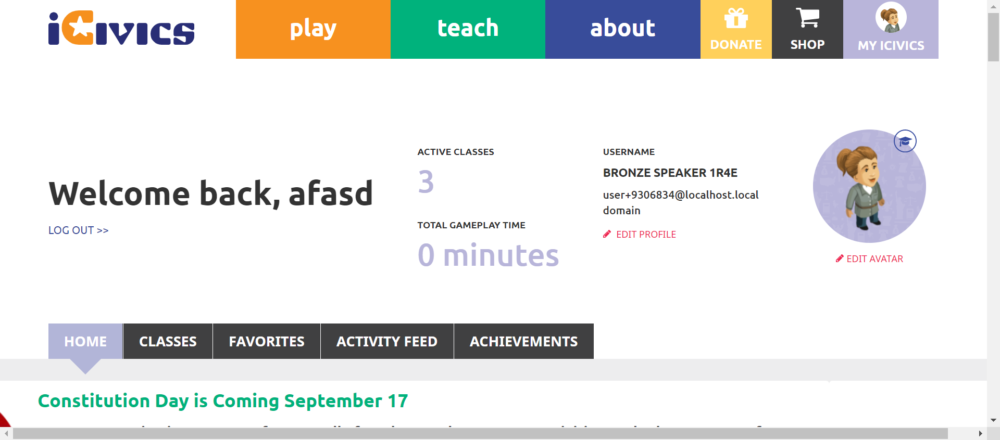 -
C6 - Do all buttons have hover/click states?
Jun 23, 2022 08:45:20 PM 0h 5m 16s+506ms failStatus Timestamp Details check_circle 3:16:48 PM The mouse over by xpath : (//a[@title='Play Games'])[3] is performed. 
check_circle 3:16:51 PM Expected Tooltip and Actual Tooltip text matched successfully 
check_circle 3:16:52 PM The Element play clicked 
check_circle 3:16:55 PM The mouse over by xpath : (//a[@title='Search Our Library'])[3] is performed. 
check_circle 3:16:58 PM Expected Tooltip and Actual Tooltip text matched successfully 
check_circle 3:16:59 PM The Element teach clicked 
check_circle 3:17:02 PM The mouse over by xpath : (//a[@title='Learn how you can financially support and fund iCivics.'])[3] is performed. 
check_circle 3:17:05 PM Expected Tooltip and Actual Tooltip text matched successfully 
check_circle 3:17:05 PM The Element about clicked 
check_circle 3:17:09 PM The mouse over by xpath : (//a[@title='Donate money to iCivics quickly and easily online.'])[2] is performed.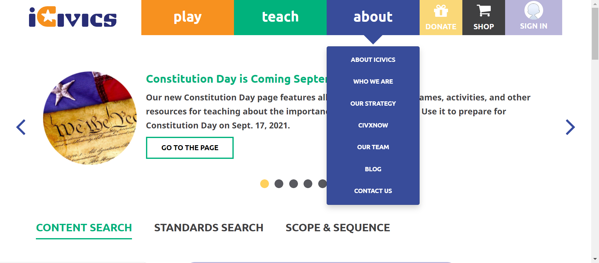 check_circle 3:17:12 PM Expected Tooltip and Actual Tooltip text matched successfully 
check_circle 3:17:23 PM The Element DONATE clicked 
check_circle 3:17:30 PM The mouse over by xpath : (//a[@title='Shop iCivics.'])[2] is performed. 
check_circle 3:17:33 PM Expected Tooltip and Actual Tooltip text matched successfully 
check_circle 3:17:33 PM The Element SHOP clicked 
check_circle 3:17:42 PM The mouse over by xpath : (//a[@title='Sign In'])[3] is performed. 
cancel 3:17:45 PM Expected Tooltip and Actual Tooltip text did not match 
cancel 3:18:15 PM Unable to find the given element (//a[@title='MY ICIVICS'])[2] :org.openqa.selenium.TimeoutException: Expected condition failed: waiting for visibility of element located by By.xpath: (//a[@title='MY ICIVICS'])[2] (tried for 10 second(s) with 500 milliseconds interval) 
cancel 3:18:49 PM The Element with locator:XPATH&(//a[@title='MY ICIVICS'])[2] Not Found with value: (//a[@title='MY ICIVICS'])[2]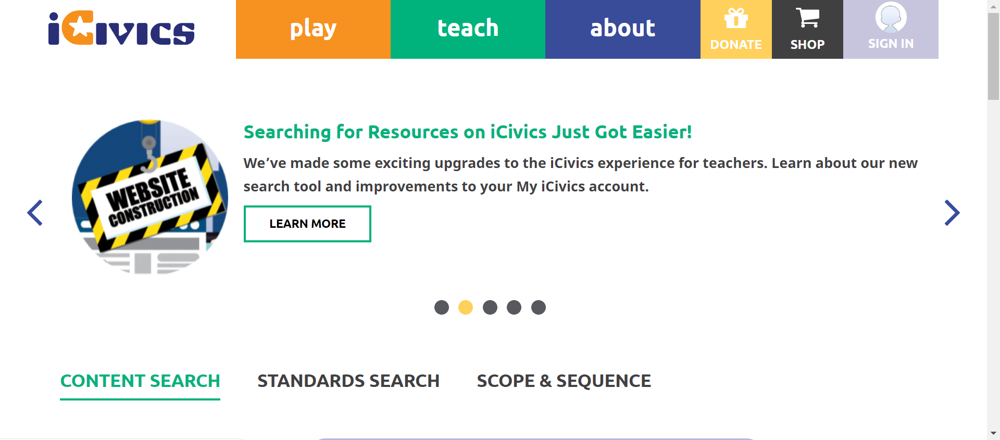 -
C6 - Do all buttons have hover/click states?
Jun 23, 2022 08:45:20 PM 0h 5m 16s+515ms passStatus Timestamp Details check_circle 3:19:19 PM The Element SIGN IN clicked 
check_circle 3:19:22 PM The Element SIGN IN clicked 
check_circle 3:19:22 PM The Element LOG IN clicked 
check_circle 3:19:43 PM The mouse over by xpath : (//a[@title='Play Games'])[3] is performed. check_circle 3:19:46 PM Expected Tooltip and Actual Tooltip text matched successfully 
check_circle 3:19:47 PM The Element play clicked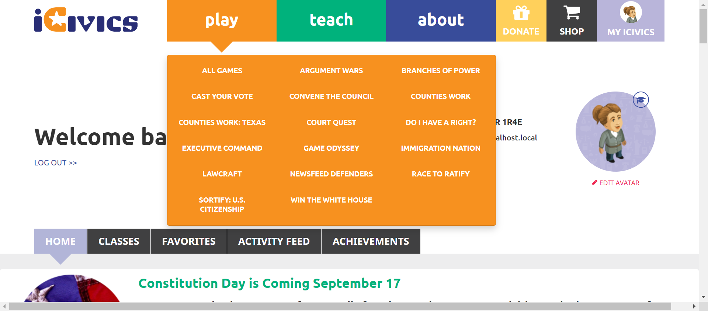 check_circle 3:19:50 PM The mouse over by xpath : (//a[@title='Search Our Library'])[3] is performed.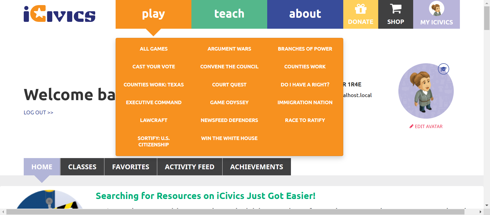 check_circle 3:19:53 PM Expected Tooltip and Actual Tooltip text matched successfully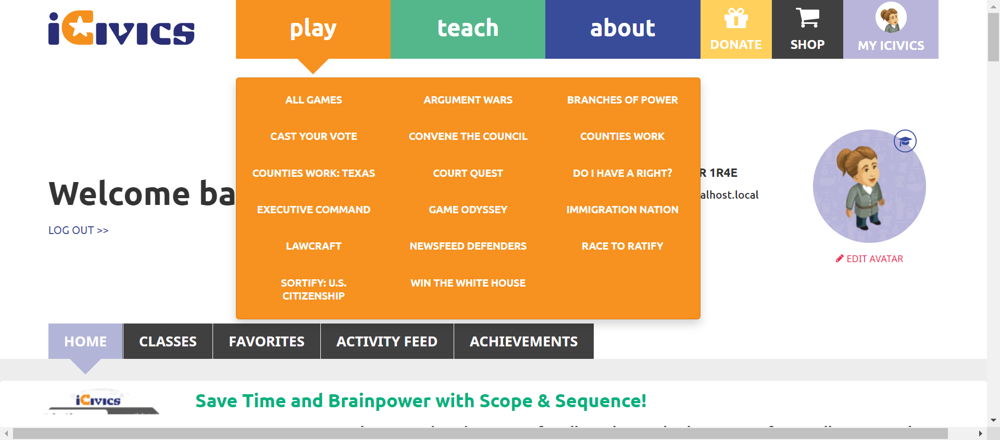 check_circle 3:19:53 PM The Element teach clicked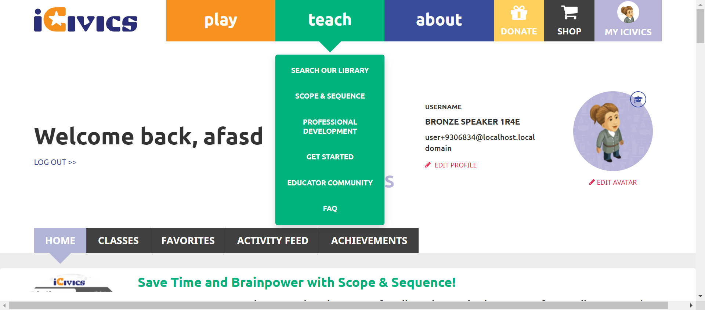 check_circle 3:19:57 PM The mouse over by xpath : (//a[@title='Learn how you can financially support and fund iCivics.'])[3] is performed.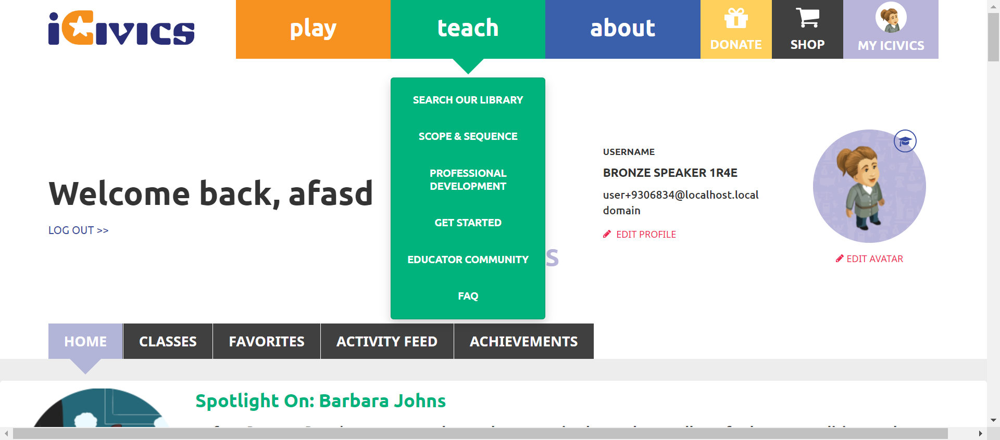 check_circle 3:20:00 PM Expected Tooltip and Actual Tooltip text matched successfully 
check_circle 3:20:00 PM The Element about clicked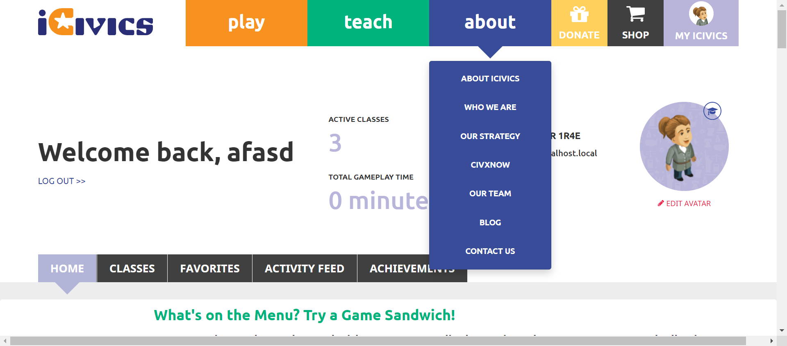 check_circle 3:20:04 PM The mouse over by xpath : (//a[@title='Donate money to iCivics quickly and easily online.'])[2] is performed. 
check_circle 3:20:07 PM Expected Tooltip and Actual Tooltip text matched successfully 
check_circle 3:20:43 PM The Element DONATE clicked 
check_circle 3:21:24 PM The mouse over by xpath : (//a[@title='Shop iCivics'])[2] is performed. 
check_circle 3:21:27 PM Expected Tooltip and Actual Tooltip text matched successfully 
check_circle 3:21:28 PM The Element SHOP clicked 
check_circle 3:22:35 PM The mouse over by xpath : (//a[@title='MY ICIVICS'])[2] is performed. 
check_circle 3:22:39 PM Expected Tooltip and Actual Tooltip text matched successfully 
check_circle 3:22:39 PM The Element MY ICIVICS clicked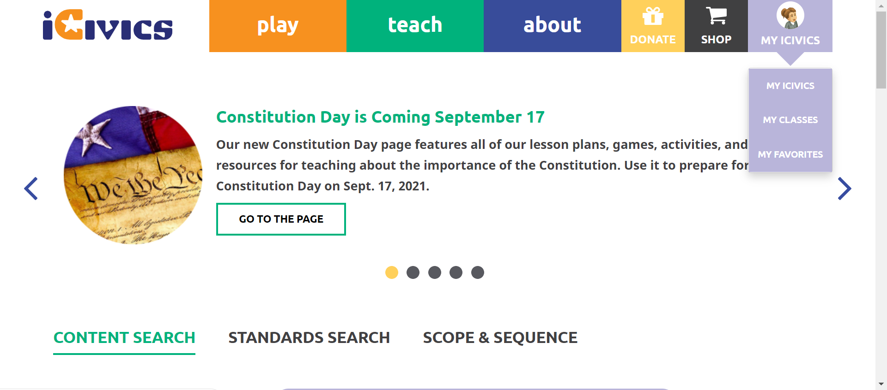 -
C7 - Does the header resize responsively at different resolutions?
Jun 23, 2022 08:45:20 PM 0h 5m 16s+524ms failStatus Timestamp Details check_circle 3:23:20 PM Ipad potrait resize is successfull 
check_circle 3:23:20 PM Hamburger Icon is displayed successfully 
check_circle 3:23:20 PM cardtitle is displayed successfully 
check_circle 3:23:24 PM Ipad landscape resize is successfull 
cancel 3:23:24 PM Hamburger Icon is not displayed successfully 
check_circle 3:23:24 PM cardtitle is displayed successfully 
check_circle 3:23:27 PM Iphone potrait resize is successfull 
check_circle 3:23:27 PM Hamburger Icon is displayed successfully 
check_circle 3:23:31 PM Iphone landscape resize is successfull 
check_circle 3:23:31 PM Hamburger Icon is displayed successfully 
check_circle 3:23:34 PM Hamburger Icon is displayed successfully 
check_circle 3:23:38 PM Hamburger Icon is displayed successfully 
check_circle 3:23:38 PM cardtitle is displayed successfully 
check_circle 3:23:38 PM cardtitle is displayed successfully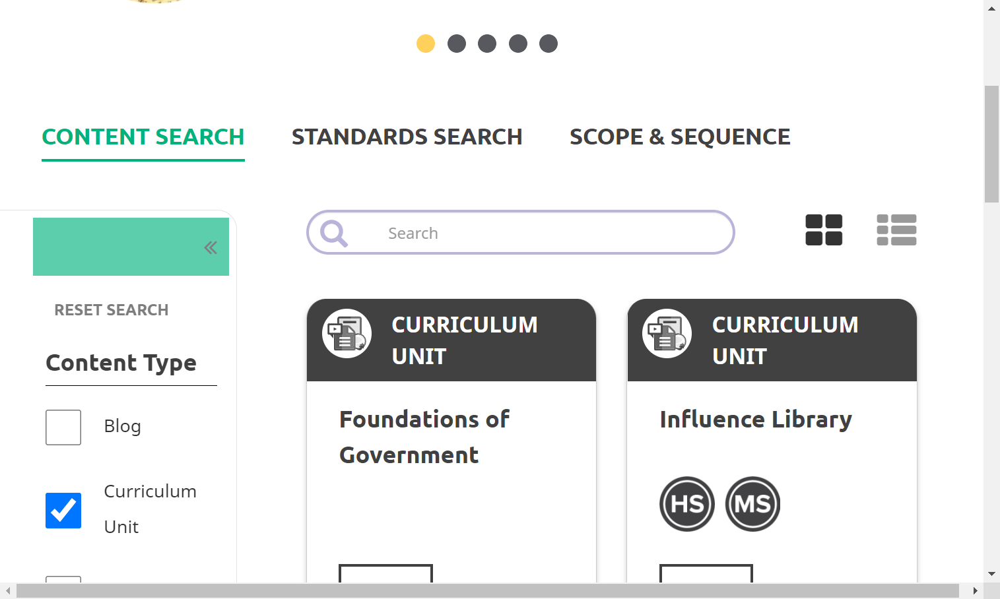 check_circle 3:23:38 PM Ipad landscape resize is successfull 
check_circle 3:23:42 PM cardtitle is displayed successfully 
check_circle 3:23:42 PM Iphone potrait resize is successfull 
check_circle 3:23:45 PM cardtitle is displayed successfully 
check_circle 3:23:45 PM Iphone landscape resize is successfull 
check_circle 3:23:45 PM cardtitle is displayed successfully 
check_circle 3:23:45 PM Samsung Galaxy potrait resize is successfull 
check_circle 3:23:46 PM cardtitle is displayed successfully 
check_circle 3:23:46 PM Samsung Galaxy landscape resize is successfull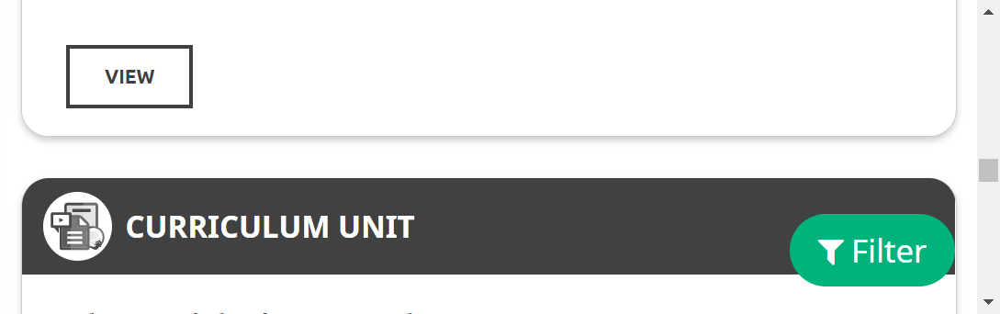
-
-
HomepageHeader Jun 23, 2022 03:39:58 PM failJun 23, 2022 03:39:58 PM Jun 23, 2022 03:48:44 PM 0h 8m 46s+0ms
-
C3 - While on all other pages, do you see buttons for Play, Teach, About, Donate, Shop, and My iCivics in the navigation bar?
Jun 23, 2022 08:45:20 PM 0h 5m 16s+552ms passStatus Timestamp Details check_circle 3:40:33 PM playbutton Verified successfully 
check_circle 3:40:33 PM Teachbutton Verified successfully 
check_circle 3:40:33 PM aboutbutton Verified successfully 
check_circle 3:40:34 PM donatebutton Verified successfully 
check_circle 3:40:34 PM Shopbutton Verified successfully 
check_circle 3:40:34 PM Signin button Verified successfully 
check_circle 3:40:34 PM The Element SIGN IN clicked 
check_circle 3:40:38 PM The Element SIGN IN clicked check_circle 3:40:38 PM The Element LOG IN clicked check_circle 3:40:59 PM Myicivicsbutton Verified successfully 
-
C3 - While on all other pages, do you see buttons for Play, Teach, About, Donate, Shop, and My iCivics in the navigation bar?
Jun 23, 2022 08:45:20 PM 0h 5m 16s+555ms passStatus Timestamp Details check_circle 3:41:09 PM The Element SIGN IN clicked 
check_circle 3:41:10 PM The Element SIGN IN clicked 
check_circle 3:41:32 PM The Element LOG IN clicked 
check_circle 3:41:36 PM playbutton Verified successfully 
check_circle 3:41:36 PM Teachbutton Verified successfully 
check_circle 3:41:36 PM aboutbutton Verified successfully 
check_circle 3:41:36 PM Donatebutton Verified successfully 
check_circle 3:41:36 PM Shopbutton Verified successfully 
check_circle 3:41:37 PM Myicivicsbutton Verified successfully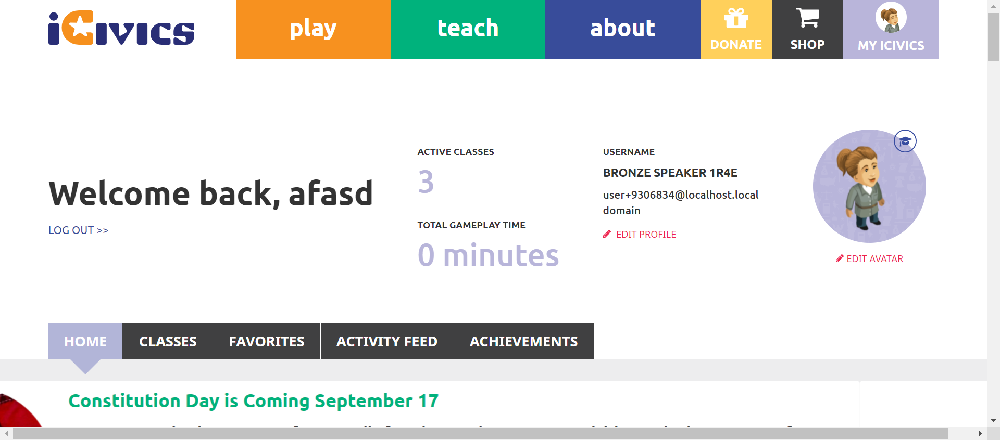 -
C6 - Do all buttons have hover/click states?
Jun 23, 2022 08:45:20 PM 0h 5m 16s+559ms failStatus Timestamp Details check_circle 3:42:07 PM The mouse over by xpath : (//a[@title='Play Games'])[3] is performed. 
check_circle 3:42:10 PM Expected Tooltip and Actual Tooltip text matched successfully 
check_circle 3:42:11 PM The Element play clicked 
check_circle 3:42:14 PM The mouse over by xpath : (//a[@title='Search Our Library'])[3] is performed. 
check_circle 3:42:17 PM Expected Tooltip and Actual Tooltip text matched successfully 
check_circle 3:42:17 PM The Element teach clicked 
check_circle 3:42:21 PM The mouse over by xpath : (//a[@title='Learn how you can financially support and fund iCivics.'])[3] is performed. check_circle 3:42:24 PM Expected Tooltip and Actual Tooltip text matched successfully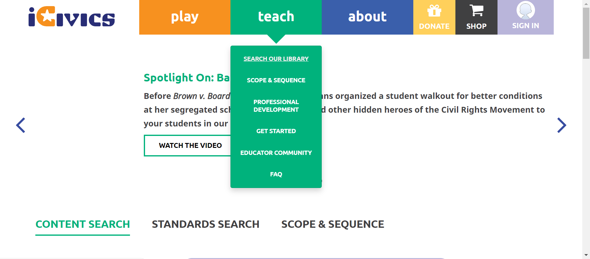 check_circle 3:42:24 PM The Element about clicked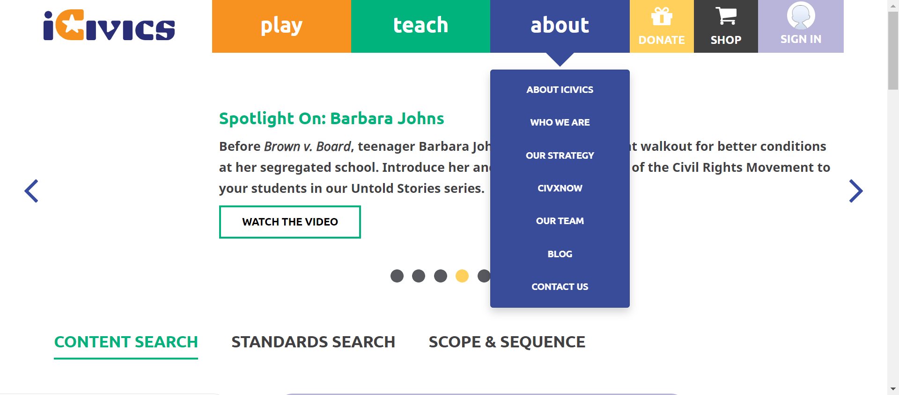 check_circle 3:42:28 PM The mouse over by xpath : (//a[@title='Donate money to iCivics quickly and easily online.'])[2] is performed. 
check_circle 3:42:31 PM Expected Tooltip and Actual Tooltip text matched successfully 
check_circle 3:42:57 PM The Element DONATE clicked 
check_circle 3:43:05 PM The mouse over by xpath : (//a[@title='Shop iCivics.'])[2] is performed. 
check_circle 3:43:08 PM Expected Tooltip and Actual Tooltip text matched successfully 
check_circle 3:43:08 PM The Element SHOP clicked 
check_circle 3:43:48 PM The mouse over by xpath : (//a[@title='Sign In'])[3] is performed. 
cancel 3:43:51 PM Expected Tooltip and Actual Tooltip text did not match 
cancel 3:44:22 PM Unable to find the given element (//a[@title='MY ICIVICS'])[2] :org.openqa.selenium.TimeoutException: Expected condition failed: waiting for visibility of element located by By.xpath: (//a[@title='MY ICIVICS'])[2] (tried for 10 second(s) with 500 milliseconds interval) 
cancel 3:44:55 PM The Element with locator:XPATH&(//a[@title='MY ICIVICS'])[2] Not Found with value: (//a[@title='MY ICIVICS'])[2] 
-
C6 - Do all buttons have hover/click states?
Jun 23, 2022 08:45:20 PM 0h 5m 16s+566ms passStatus Timestamp Details check_circle 3:45:27 PM The Element SIGN IN clicked 
check_circle 3:45:30 PM The Element SIGN IN clicked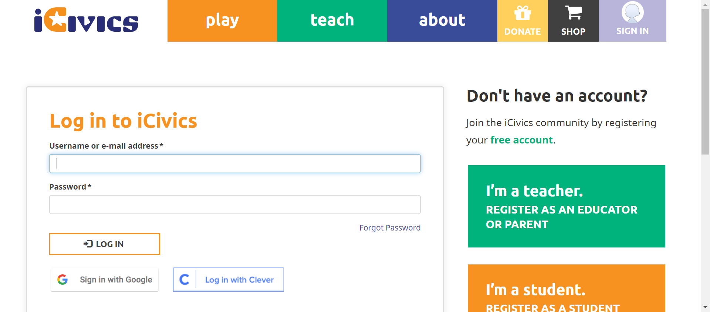 check_circle 3:45:50 PM The Element LOG IN clicked check_circle 3:45:54 PM The mouse over by xpath : (//a[@title='Play Games'])[3] is performed. 
check_circle 3:45:57 PM Expected Tooltip and Actual Tooltip text matched successfully 
check_circle 3:45:57 PM The Element play clicked 
check_circle 3:46:01 PM The mouse over by xpath : (//a[@title='Search Our Library'])[3] is performed. 
check_circle 3:46:04 PM Expected Tooltip and Actual Tooltip text matched successfully 
check_circle 3:46:04 PM The Element teach clicked 
check_circle 3:46:07 PM The mouse over by xpath : (//a[@title='Learn how you can financially support and fund iCivics.'])[3] is performed. 
check_circle 3:46:11 PM Expected Tooltip and Actual Tooltip text matched successfully 
check_circle 3:46:11 PM The Element about clicked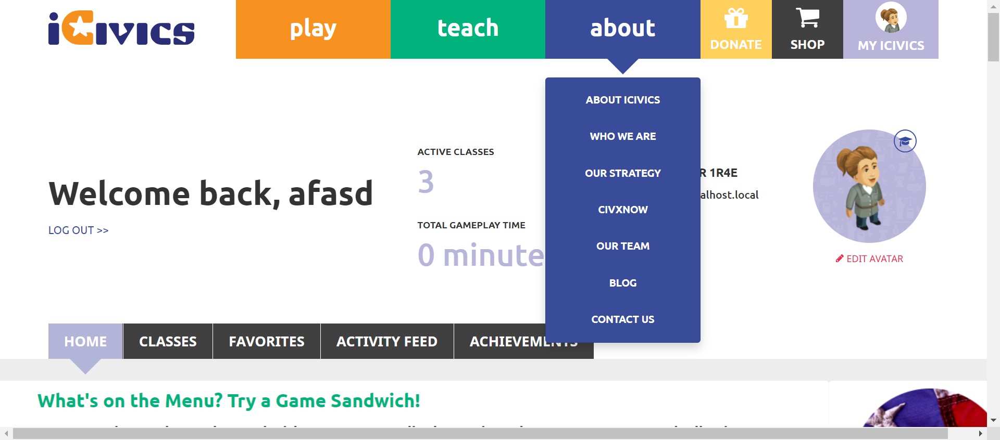 check_circle 3:46:14 PM The mouse over by xpath : (//a[@title='Donate money to iCivics quickly and easily online.'])[2] is performed. 
check_circle 3:46:17 PM Expected Tooltip and Actual Tooltip text matched successfully 
check_circle 3:46:28 PM The Element DONATE clicked 
check_circle 3:46:59 PM The mouse over by xpath : (//a[@title='Shop iCivics'])[2] is performed. 
check_circle 3:47:03 PM Expected Tooltip and Actual Tooltip text matched successfully 
check_circle 3:47:07 PM The Element SHOP clicked 
check_circle 3:47:36 PM The mouse over by xpath : (//a[@title='MY ICIVICS'])[2] is performed. 
check_circle 3:47:42 PM Expected Tooltip and Actual Tooltip text matched successfully 
check_circle 3:47:42 PM The Element MY ICIVICS clicked 
-
C7 - Does the header resize responsively at different resolutions?
Jun 23, 2022 08:45:20 PM 0h 5m 16s+573ms failStatus Timestamp Details check_circle 3:48:18 PM Ipad potrait resize is successfull 
check_circle 3:48:18 PM Hamburger Icon is displayed successfully 
check_circle 3:48:18 PM cardtitle is displayed successfully 
check_circle 3:48:22 PM Ipad landscape resize is successfull 
cancel 3:48:22 PM Hamburger Icon is not displayed successfully 
check_circle 3:48:22 PM cardtitle is displayed successfully 
check_circle 3:48:26 PM Iphone potrait resize is successfull 
check_circle 3:48:26 PM Hamburger Icon is displayed successfully 
check_circle 3:48:29 PM Iphone landscape resize is successfull 
check_circle 3:48:29 PM Hamburger Icon is displayed successfully 
check_circle 3:48:33 PM Hamburger Icon is displayed successfully 
check_circle 3:48:36 PM Hamburger Icon is displayed successfully 
check_circle 3:48:36 PM cardtitle is displayed successfully 
check_circle 3:48:37 PM cardtitle is displayed successfully 
check_circle 3:48:37 PM Ipad landscape resize is successfull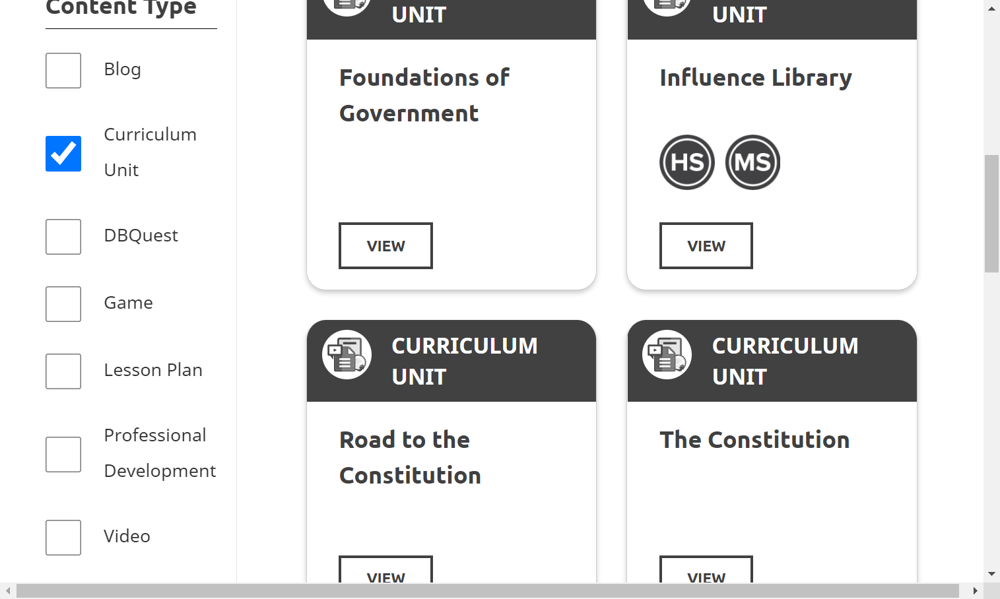 check_circle 3:48:40 PM cardtitle is displayed successfully 
check_circle 3:48:40 PM Iphone potrait resize is successfull 
check_circle 3:48:44 PM cardtitle is displayed successfully 
check_circle 3:48:44 PM Iphone landscape resize is successfull 
check_circle 3:48:44 PM cardtitle is displayed successfully 
check_circle 3:48:44 PM Samsung Galaxy potrait resize is successfull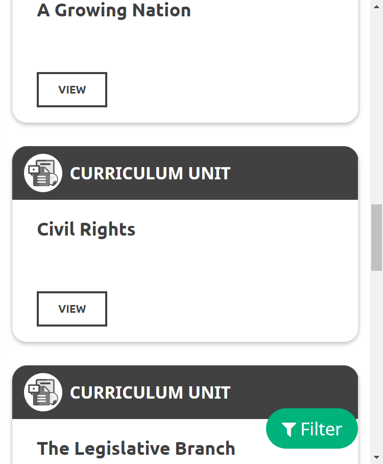 check_circle 3:48:44 PM cardtitle is displayed successfully 
check_circle 3:48:44 PM Samsung Galaxy landscape resize is successfull 
-
-
HomepageHeader Jun 23, 2022 04:05:58 PM failJun 23, 2022 04:05:58 PM Jun 23, 2022 04:08:58 PM 0h 3m 0s+0ms
-
C6 - Do all buttons have hover/click states?
Jun 23, 2022 08:45:20 PM 0h 5m 16s+584ms failStatus Timestamp Details check_circle 4:06:32 PM The mouse over by xpath : (//a[@title='Play Games'])[3] is performed. 
check_circle 4:06:35 PM Expected Tooltip and Actual Tooltip text matched successfully 
check_circle 4:06:35 PM The Element play clicked 
check_circle 4:06:39 PM The mouse over by xpath : (//a[@title='Search Our Library'])[3] is performed. 
check_circle 4:06:42 PM Expected Tooltip and Actual Tooltip text matched successfully 
check_circle 4:06:42 PM The Element teach clicked 
check_circle 4:06:45 PM The mouse over by xpath : (//a[@title='Learn how you can financially support and fund iCivics.'])[3] is performed.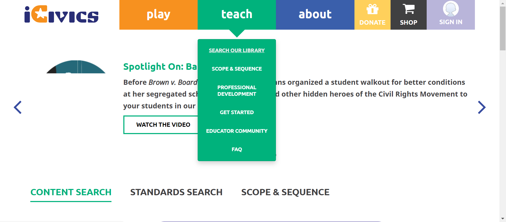 check_circle 4:06:49 PM Expected Tooltip and Actual Tooltip text matched successfully 
check_circle 4:06:49 PM The Element about clicked 
check_circle 4:06:52 PM The mouse over by xpath : (//a[@title='Donate money to iCivics quickly and easily online.'])[2] is performed. 
check_circle 4:06:56 PM Expected Tooltip and Actual Tooltip text matched successfully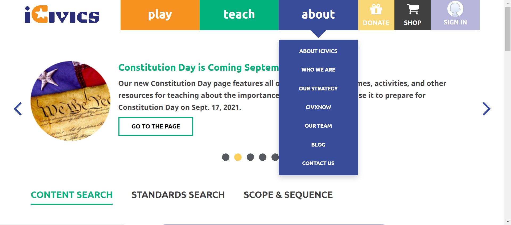 check_circle 4:07:16 PM The Element DONATE clicked 
check_circle 4:07:23 PM The mouse over by xpath : (//a[@title='Shop iCivics.'])[2] is performed. 
check_circle 4:07:26 PM Expected Tooltip and Actual Tooltip text matched successfully 
check_circle 4:07:27 PM The Element SHOP clicked 
check_circle 4:07:52 PM The mouse over by xpath : (//a[@title='Sign In'])[3] is performed. 
cancel 4:07:55 PM Expected Tooltip and Actual Tooltip text did not match 
cancel 4:08:25 PM Unable to find the given element (//a[@title='MY ICIVICS'])[2] :org.openqa.selenium.TimeoutException: Expected condition failed: waiting for visibility of element located by By.xpath: (//a[@title='MY ICIVICS'])[2] (tried for 10 second(s) with 500 milliseconds interval)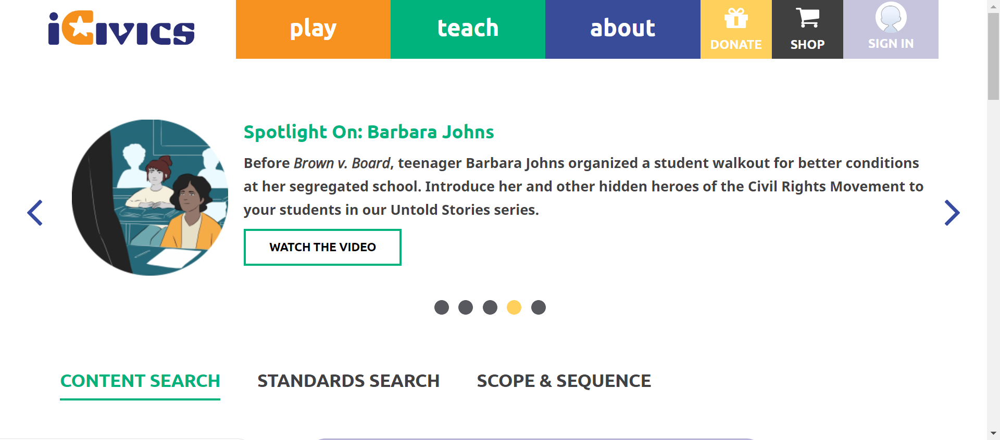 cancel 4:08:58 PM The Element with locator:XPATH&(//a[@title='MY ICIVICS'])[2] Not Found with value: (//a[@title='MY ICIVICS'])[2] 
-
-
HomepageHeader Jun 23, 2022 04:15:34 PM failJun 23, 2022 04:15:34 PM Jun 23, 2022 04:17:42 PM 0h 2m 8s+0ms
-
C6 - Do all buttons have hover/click states?
Jun 23, 2022 08:45:20 PM 0h 5m 16s+593ms failStatus Timestamp Details check_circle 4:16:06 PM The mouse over by xpath : (//a[@title='Play Games'])[3] is performed. 
check_circle 4:16:09 PM Expected Tooltip and Actual Tooltip text matched successfully 
check_circle 4:16:10 PM The Element play clicked 
check_circle 4:16:13 PM The mouse over by xpath : (//a[@title='Search Our Library'])[3] is performed. 
check_circle 4:16:16 PM Expected Tooltip and Actual Tooltip text matched successfully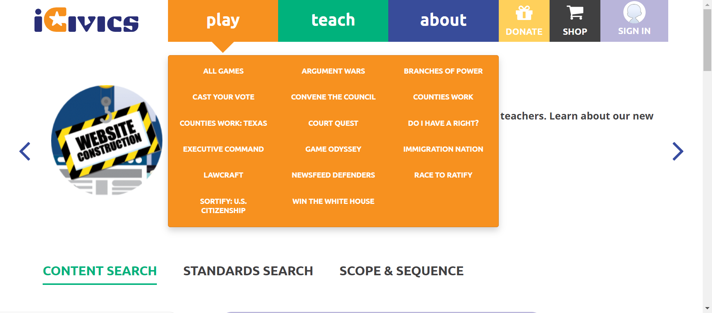 check_circle 4:16:17 PM The Element teach clicked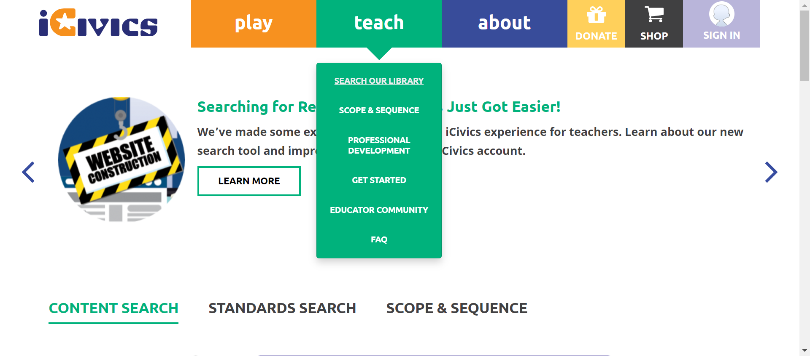 check_circle 4:16:20 PM The mouse over by xpath : (//a[@title='Learn how you can financially support and fund iCivics.'])[3] is performed.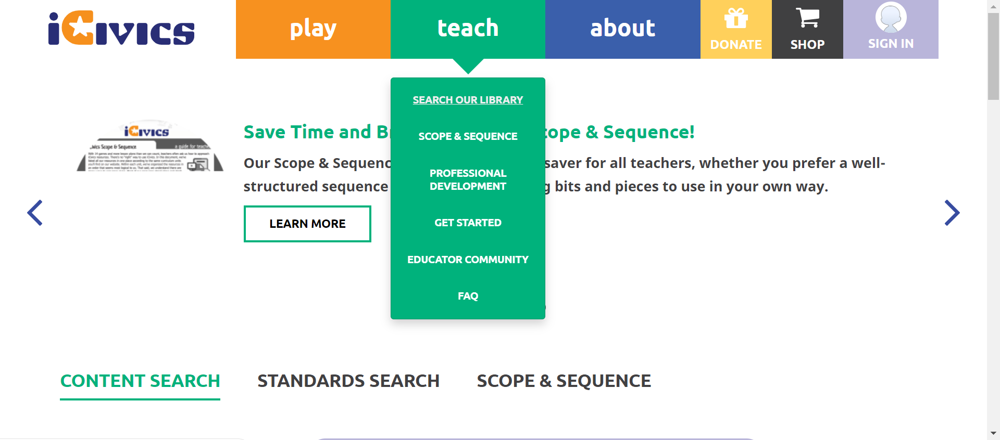 check_circle 4:16:23 PM Expected Tooltip and Actual Tooltip text matched successfully 
check_circle 4:16:23 PM The Element about clicked 
check_circle 4:16:27 PM The mouse over by xpath : (//a[@title='Donate money to iCivics quickly and easily online.'])[2] is performed. check_circle 4:16:30 PM Expected Tooltip and Actual Tooltip text matched successfully 
check_circle 4:16:59 PM The Element DONATE clicked 
check_circle 4:17:07 PM The mouse over by xpath : (//a[@title='Shop iCivics.'])[2] is performed. 
check_circle 4:17:10 PM Expected Tooltip and Actual Tooltip text matched successfully 
check_circle 4:17:11 PM The Element SHOP clicked 
check_circle 4:17:32 PM The mouse over by xpath : (//a[@title='Sign In'])[3] is performed. 
cancel 4:17:35 PM Expected Tooltip and Actual Tooltip text did not match 
check_circle 4:17:35 PM The mouse over by xpath : (//span[@class='link-title'])[2] is performed. 
cancel 4:17:41 PM Expected Tooltip and Actual Tooltip text did not match 
check_circle 4:17:42 PM The Element SIGN IN clicked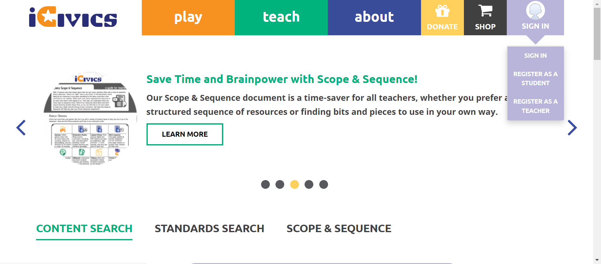
-
-
HomepageHeader Jun 23, 2022 04:19:15 PM failJun 23, 2022 04:19:15 PM Jun 23, 2022 04:21:26 PM 0h 2m 11s+0ms
-
C6 - Do all buttons have hover/click states?
Jun 23, 2022 08:45:20 PM 0h 5m 16s+604ms failStatus Timestamp Details check_circle 4:19:50 PM The mouse over by xpath : (//a[@title='Play Games'])[3] is performed. 
check_circle 4:19:53 PM Expected Tooltip and Actual Tooltip text matched successfully 
check_circle 4:19:54 PM The Element play clicked 
check_circle 4:19:57 PM The mouse over by xpath : (//a[@title='Search Our Library'])[3] is performed. 
check_circle 4:20:00 PM Expected Tooltip and Actual Tooltip text matched successfully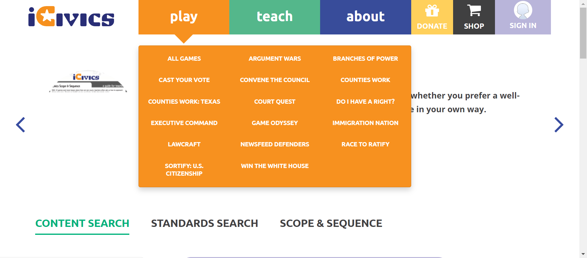 check_circle 4:20:00 PM The Element teach clicked check_circle 4:20:04 PM The mouse over by xpath : (//a[@title='Learn how you can financially support and fund iCivics.'])[3] is performed. 
check_circle 4:20:07 PM Expected Tooltip and Actual Tooltip text matched successfully 
check_circle 4:20:07 PM The Element about clicked 
check_circle 4:20:11 PM The mouse over by xpath : (//a[@title='Donate money to iCivics quickly and easily online.'])[2] is performed. 
check_circle 4:20:14 PM Expected Tooltip and Actual Tooltip text matched successfully 
check_circle 4:20:39 PM The Element DONATE clicked 
check_circle 4:20:50 PM The mouse over by xpath : (//a[@title='Shop iCivics.'])[2] is performed. 
check_circle 4:20:53 PM Expected Tooltip and Actual Tooltip text matched successfully 
check_circle 4:20:53 PM The Element SHOP clicked 
check_circle 4:21:16 PM The mouse over by xpath : (//a[@title='Sign In'])[3] is performed. 
cancel 4:21:19 PM Expected Tooltip and Actual Tooltip text did not match 
check_circle 4:21:20 PM The mouse over by xpath : (//span[@class='link-title'])[2] is performed. 
cancel 4:21:26 PM Expected Tooltip and Actual Tooltip text did not match 
check_circle 4:21:26 PM The Element SIGN IN clicked 
-
-
HomepageHeader Jun 23, 2022 04:24:41 PM failJun 23, 2022 04:24:41 PM Jun 23, 2022 04:26:54 PM 0h 2m 13s+0ms
-
C6 - Do all buttons have hover/click states?
Jun 23, 2022 08:45:20 PM 0h 5m 16s+616ms failStatus Timestamp Details check_circle 4:25:13 PM The mouse over by xpath : (//a[@title='Play Games'])[3] is performed. check_circle 4:25:16 PM Expected Tooltip and Actual Tooltip text matched successfully 
check_circle 4:25:17 PM The Element play clicked 
check_circle 4:25:20 PM The mouse over by xpath : (//a[@title='Search Our Library'])[3] is performed.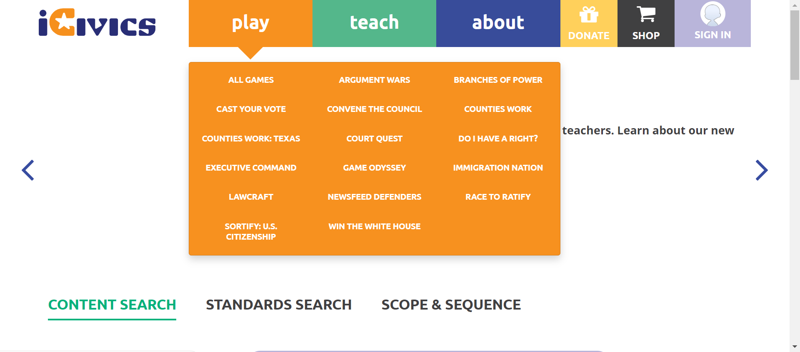 check_circle 4:25:23 PM Expected Tooltip and Actual Tooltip text matched successfully check_circle 4:25:23 PM The Element teach clicked 
check_circle 4:25:27 PM The mouse over by xpath : (//a[@title='Learn how you can financially support and fund iCivics.'])[3] is performed. check_circle 4:25:30 PM Expected Tooltip and Actual Tooltip text matched successfully 
check_circle 4:25:30 PM The Element about clicked 
check_circle 4:25:34 PM The mouse over by xpath : (//a[@title='Donate money to iCivics quickly and easily online.'])[2] is performed. 
check_circle 4:25:37 PM Expected Tooltip and Actual Tooltip text matched successfully 
check_circle 4:26:01 PM The Element DONATE clicked 
check_circle 4:26:10 PM The mouse over by xpath : (//a[@title='Shop iCivics.'])[2] is performed. 
check_circle 4:26:13 PM Expected Tooltip and Actual Tooltip text matched successfully 
check_circle 4:26:14 PM The Element SHOP clicked 
check_circle 4:26:44 PM The mouse over by xpath : (//a[@title='Sign In'])[3] is performed. 
cancel 4:26:47 PM Expected Tooltip and Actual Tooltip text did not match check_circle 4:26:47 PM The mouse over by xpath : (//a[@title='Sign In'])[3] is performed. 
cancel 4:26:53 PM Expected Tooltip and Actual Tooltip text did not match 
check_circle 4:26:54 PM The Element SIGN IN clicked 
-
-
HomepageHeader Jun 23, 2022 04:31:39 PM failJun 23, 2022 04:31:39 PM Jun 23, 2022 04:33:59 PM 0h 2m 20s+0ms
-
C6 - Do all buttons have hover/click states?
Jun 23, 2022 08:45:20 PM 0h 5m 16s+622ms failStatus Timestamp Details check_circle 4:32:12 PM The mouse over by xpath : (//a[@title='Play Games'])[3] is performed. 
check_circle 4:32:15 PM Expected Tooltip and Actual Tooltip text matched successfully 
check_circle 4:32:16 PM The Element play clicked 
check_circle 4:32:19 PM The mouse over by xpath : (//a[@title='Search Our Library'])[3] is performed. 
check_circle 4:32:22 PM Expected Tooltip and Actual Tooltip text matched successfully 
check_circle 4:32:23 PM The Element teach clicked 
check_circle 4:32:26 PM The mouse over by xpath : (//a[@title='Learn how you can financially support and fund iCivics.'])[3] is performed. 
check_circle 4:32:29 PM Expected Tooltip and Actual Tooltip text matched successfully 
check_circle 4:32:29 PM The Element about clicked 
check_circle 4:32:33 PM The mouse over by xpath : (//a[@title='Donate money to iCivics quickly and easily online.'])[2] is performed. 
check_circle 4:32:36 PM Expected Tooltip and Actual Tooltip text matched successfully 
check_circle 4:33:01 PM The Element DONATE clicked 
check_circle 4:33:15 PM The mouse over by xpath : (//a[@title='Shop iCivics.'])[2] is performed. 
check_circle 4:33:18 PM Expected Tooltip and Actual Tooltip text matched successfully 
check_circle 4:33:19 PM The Element SHOP clicked 
check_circle 4:33:43 PM The mouse over by xpath : (//a[@title='Sign In'])[3] is performed. 
cancel 4:33:49 PM Expected Tooltip and Actual Tooltip text did not match 
check_circle 4:33:49 PM The Element SIGN IN clicked check_circle 4:33:53 PM The mouse over by xpath : (//a[@title='Sign In'])[3] is performed. 
cancel 4:33:59 PM Expected Tooltip and Actual Tooltip text did not match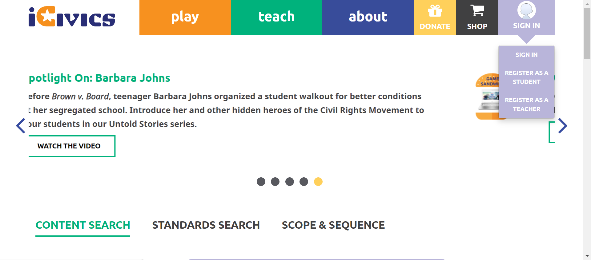 check_circle 4:33:59 PM The Element SIGN IN clicked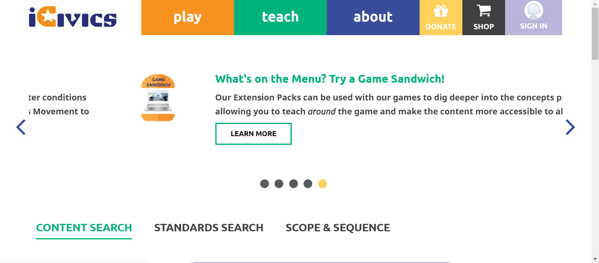
-
-
HomepageHeader Jun 23, 2022 04:35:23 PM failJun 23, 2022 04:35:23 PM Jun 23, 2022 04:37:55 PM 0h 2m 32s+0ms
-
C6 - Do all buttons have hover/click states?
Jun 23, 2022 08:45:20 PM 0h 5m 16s+629ms failStatus Timestamp Details check_circle 4:35:57 PM The mouse over by xpath : (//a[@title='Play Games'])[3] is performed. 
check_circle 4:36:00 PM Expected Tooltip and Actual Tooltip text matched successfully 
check_circle 4:36:01 PM The Element play clicked 
check_circle 4:36:04 PM The mouse over by xpath : (//a[@title='Search Our Library'])[3] is performed.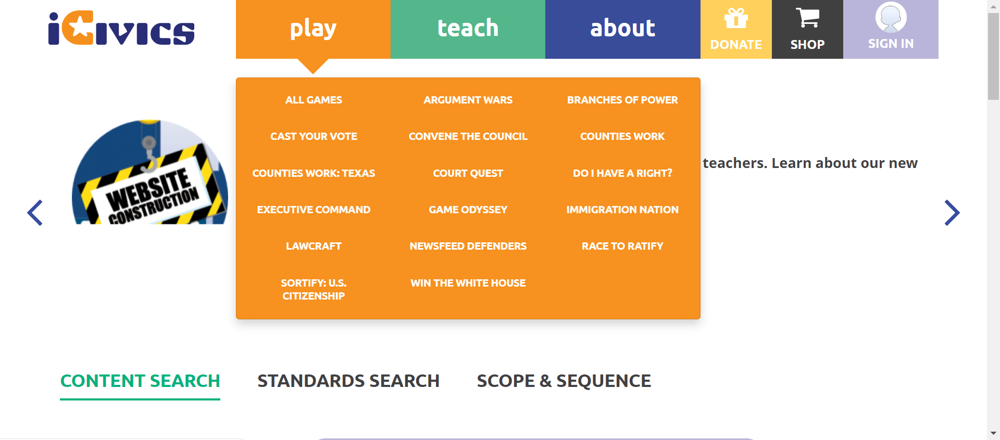 check_circle 4:36:07 PM Expected Tooltip and Actual Tooltip text matched successfully 
check_circle 4:36:08 PM The Element teach clicked 
check_circle 4:36:11 PM The mouse over by xpath : (//a[@title='Learn how you can financially support and fund iCivics.'])[3] is performed. 
check_circle 4:36:14 PM Expected Tooltip and Actual Tooltip text matched successfully check_circle 4:36:14 PM The Element about clicked check_circle 4:36:18 PM The mouse over by xpath : (//a[@title='Donate money to iCivics quickly and easily online.'])[2] is performed. 
check_circle 4:36:21 PM Expected Tooltip and Actual Tooltip text matched successfully 
check_circle 4:36:53 PM The Element DONATE clicked 
check_circle 4:37:02 PM The mouse over by xpath : (//a[@title='Shop iCivics.'])[2] is performed. 
check_circle 4:37:05 PM Expected Tooltip and Actual Tooltip text matched successfully 
check_circle 4:37:06 PM The Element SHOP clicked 
check_circle 4:37:45 PM The mouse over by xpath : (//a[@title='Sign In'])[3] is performed. 
cancel 4:37:48 PM Expected Tooltip and Actual Tooltip text did not match 
check_circle 4:37:49 PM The mouse over by xpath : (//a[@title='Sign In'])[3] is performed. 
cancel 4:37:55 PM Expected Tooltip and Actual Tooltip text did not match 
check_circle 4:37:55 PM The Element SIGN IN clicked 
-
-
HomepageHeader Jun 23, 2022 04:39:45 PM failJun 23, 2022 04:39:45 PM Jun 23, 2022 04:42:43 PM 0h 2m 58s+0ms
-
C6 - Do all buttons have hover/click states?
Jun 23, 2022 08:45:20 PM 0h 5m 16s+638ms failStatus Timestamp Details check_circle 4:40:22 PM The mouse over by xpath : (//a[@title='Play Games'])[3] is performed. 
check_circle 4:40:25 PM Expected Tooltip and Actual Tooltip text matched successfully 
check_circle 4:40:26 PM The Element play clicked 
check_circle 4:40:29 PM The mouse over by xpath : (//a[@title='Search Our Library'])[3] is performed. 
check_circle 4:40:32 PM Expected Tooltip and Actual Tooltip text matched successfully check_circle 4:40:32 PM The Element teach clicked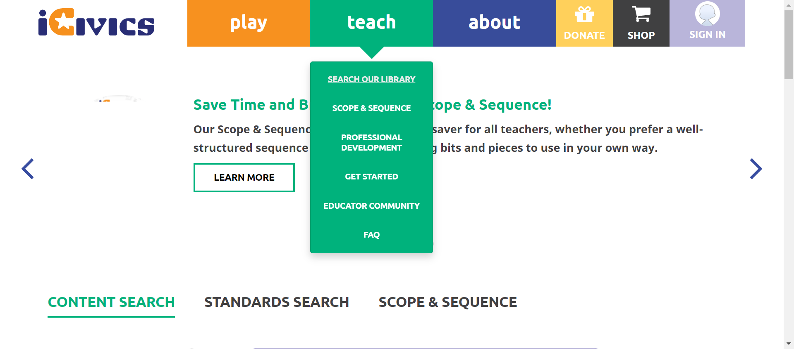 check_circle 4:40:36 PM The mouse over by xpath : (//a[@title='Learn how you can financially support and fund iCivics.'])[3] is performed. 
check_circle 4:40:39 PM Expected Tooltip and Actual Tooltip text matched successfully 
check_circle 4:40:39 PM The Element about clicked 
check_circle 4:40:42 PM The mouse over by xpath : (//a[@title='Donate money to iCivics quickly and easily online.'])[2] is performed. 
check_circle 4:40:46 PM Expected Tooltip and Actual Tooltip text matched successfully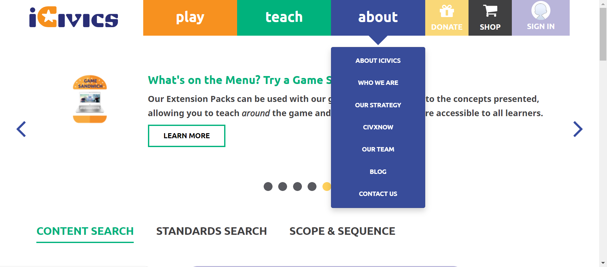 check_circle 4:41:22 PM The Element DONATE clicked 
check_circle 4:41:33 PM The mouse over by xpath : (//a[@title='Shop iCivics.'])[2] is performed. 
check_circle 4:41:37 PM Expected Tooltip and Actual Tooltip text matched successfully 
check_circle 4:41:37 PM The Element SHOP clicked 
check_circle 4:41:56 PM The mouse over by xpath : (//a[@title='Sign In'])[3] is performed. 
cancel 4:42:00 PM Expected Tooltip and Actual Tooltip text did not match 
check_circle 4:42:00 PM The Element SIGN IN clicked 
check_circle 4:42:15 PM The Element SIGN IN clicked check_circle 4:42:15 PM The Element LOG IN clicked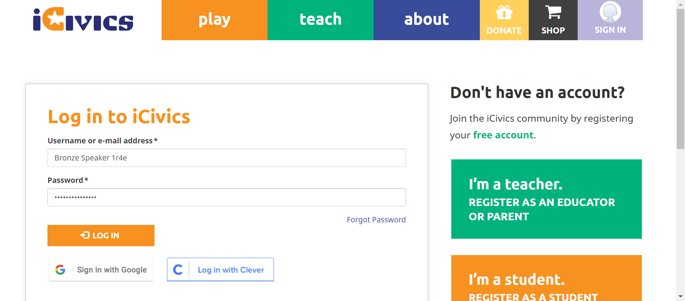 check_circle 4:42:36 PM The mouse over by xpath : (//a[@title='MY ICIVICS'])[2] is performed. 
check_circle 4:42:43 PM Expected Tooltip and Actual Tooltip text matched successfully 
check_circle 4:42:43 PM The Element MY ICIVICS clicked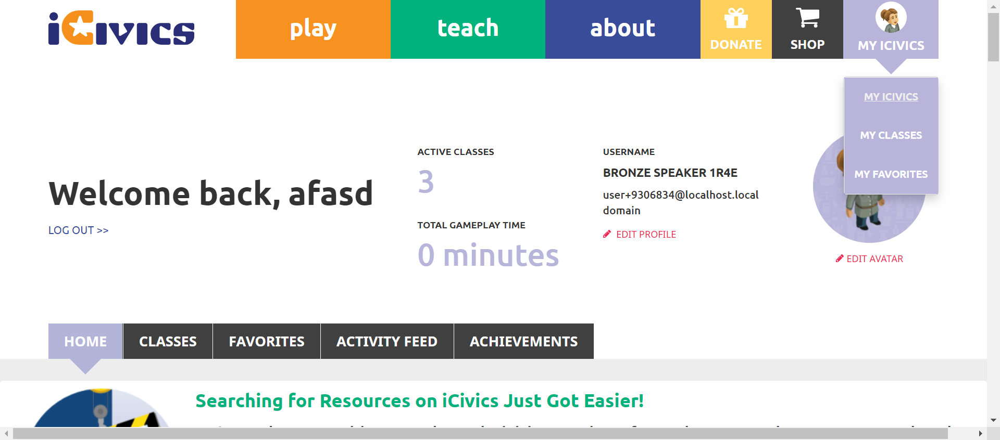
-
-
HomepageHeader Jun 23, 2022 04:51:26 PM failJun 23, 2022 04:51:26 PM Jun 23, 2022 04:54:27 PM 0h 3m 1s+0ms
-
C6 - Do all buttons have hover/click states?
Jun 23, 2022 08:45:20 PM 0h 5m 16s+644ms failStatus Timestamp Details check_circle 4:52:01 PM The mouse over by xpath : (//a[@title='Play Games'])[3] is performed. 
check_circle 4:52:05 PM Expected Tooltip and Actual Tooltip text matched successfully 
check_circle 4:52:05 PM The Element play clicked 
check_circle 4:52:08 PM The mouse over by xpath : (//a[@title='Search Our Library'])[3] is performed.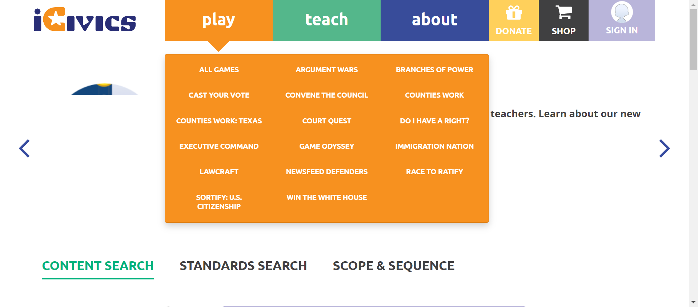 check_circle 4:52:11 PM Expected Tooltip and Actual Tooltip text matched successfully 
check_circle 4:52:12 PM The Element teach clicked 
check_circle 4:52:15 PM The mouse over by xpath : (//a[@title='Learn how you can financially support and fund iCivics.'])[3] is performed. 
check_circle 4:52:18 PM Expected Tooltip and Actual Tooltip text matched successfully 
check_circle 4:52:18 PM The Element about clicked 
check_circle 4:52:22 PM The mouse over by xpath : (//a[@title='Donate money to iCivics quickly and easily online.'])[2] is performed.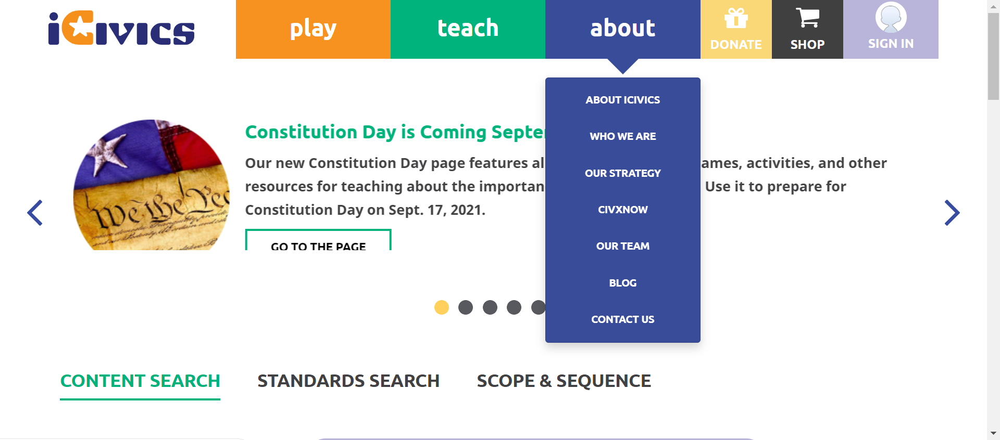 check_circle 4:52:25 PM Expected Tooltip and Actual Tooltip text matched successfully 
check_circle 4:52:55 PM The Element DONATE clicked 
check_circle 4:53:03 PM The mouse over by xpath : (//a[@title='Shop iCivics.'])[2] is performed. 
check_circle 4:53:06 PM Expected Tooltip and Actual Tooltip text matched successfully 
check_circle 4:53:06 PM The Element SHOP clicked 
check_circle 4:53:46 PM The mouse over by xpath : (//a[@title='Sign In'])[3] is performed. 
cancel 4:53:49 PM Expected Tooltip and Actual Tooltip text did not match 
check_circle 4:53:49 PM The Element SIGN IN clicked 
check_circle 4:53:58 PM The Element SIGN IN clicked check_circle 4:53:59 PM The Element LOG IN clicked check_circle 4:54:20 PM The mouse over by xpath : (//a[@title='MY ICIVICS'])[2] is performed. 
check_circle 4:54:26 PM Expected Tooltip and Actual Tooltip text matched successfully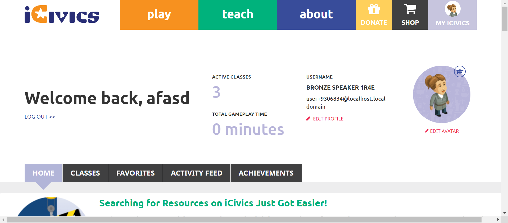 check_circle 4:54:27 PM The Element MY ICIVICS clicked 
-
-
HomepageHeader Jun 23, 2022 04:56:26 PM failJun 23, 2022 04:56:26 PM Jun 23, 2022 04:58:44 PM 0h 2m 18s+0ms
-
C6 - Do all buttons have hover/click states?
Jun 23, 2022 08:45:20 PM 0h 5m 16s+652ms failStatus Timestamp Details check_circle 4:56:58 PM The mouse over by xpath : (//a[@title='Play Games'])[3] is performed. 
check_circle 4:57:01 PM Expected Tooltip and Actual Tooltip text matched successfully 
check_circle 4:57:01 PM The Element play clicked 
check_circle 4:57:05 PM The mouse over by xpath : (//a[@title='Search Our Library'])[3] is performed. 
check_circle 4:57:08 PM Expected Tooltip and Actual Tooltip text matched successfully 
check_circle 4:57:08 PM The Element teach clicked 
check_circle 4:57:11 PM The mouse over by xpath : (//a[@title='Learn how you can financially support and fund iCivics.'])[3] is performed.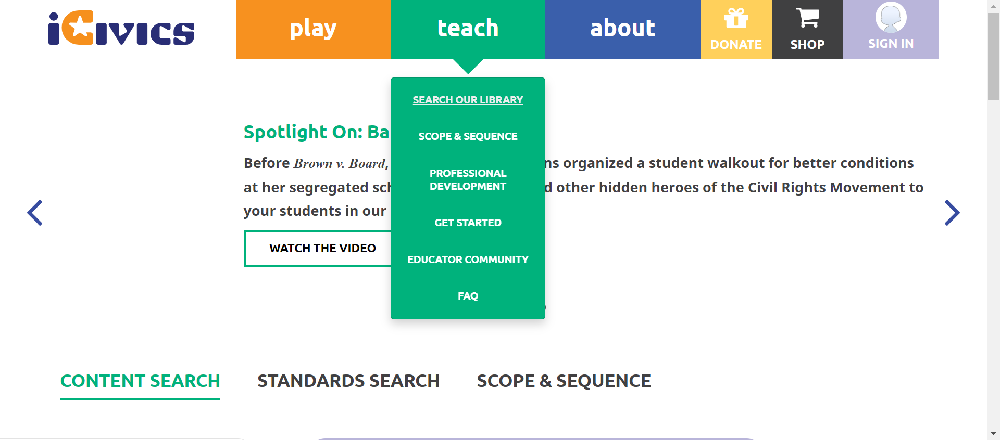 check_circle 4:57:15 PM Expected Tooltip and Actual Tooltip text matched successfully 
check_circle 4:57:15 PM The Element about clicked 
check_circle 4:57:18 PM The mouse over by xpath : (//a[@title='Donate money to iCivics quickly and easily online.'])[2] is performed. 
check_circle 4:57:22 PM Expected Tooltip and Actual Tooltip text matched successfully check_circle 4:57:42 PM The Element DONATE clicked 
check_circle 4:57:56 PM The mouse over by xpath : (//a[@title='Shop iCivics.'])[2] is performed. 
check_circle 4:58:00 PM Expected Tooltip and Actual Tooltip text matched successfully 
check_circle 4:58:00 PM The Element SHOP clicked 
check_circle 4:58:19 PM The mouse over by xpath : (//a[@title='Sign In'])[3] is performed. 
cancel 4:58:23 PM Expected Tooltip and Actual Tooltip text did not match 
check_circle 4:58:23 PM The Element SIGN IN clicked 
check_circle 4:58:26 PM The Element SIGN IN clicked check_circle 4:58:34 PM The Element LOG IN clicked check_circle 4:58:37 PM The mouse over by xpath : (//a[@title='MY ICIVICS'])[2] is performed. 
check_circle 4:58:43 PM Expected Tooltip and Actual Tooltip text matched successfully 
check_circle 4:58:44 PM The Element MY ICIVICS clicked 
-
-
HomepageHeader Jun 23, 2022 05:00:49 PM failJun 23, 2022 05:00:49 PM Jun 23, 2022 05:02:59 PM 0h 2m 10s+0ms
-
C6 - Do all buttons have hover/click states?
Jun 23, 2022 08:45:20 PM 0h 5m 16s+660ms failStatus Timestamp Details check_circle 5:01:21 PM The mouse over by xpath : (//a[@title='Play Games'])[3] is performed. 
check_circle 5:01:24 PM Expected Tooltip and Actual Tooltip text matched successfully 
check_circle 5:01:25 PM The Element play clicked 
check_circle 5:01:28 PM The mouse over by xpath : (//a[@title='Search Our Library'])[3] is performed. 
check_circle 5:01:31 PM Expected Tooltip and Actual Tooltip text matched successfully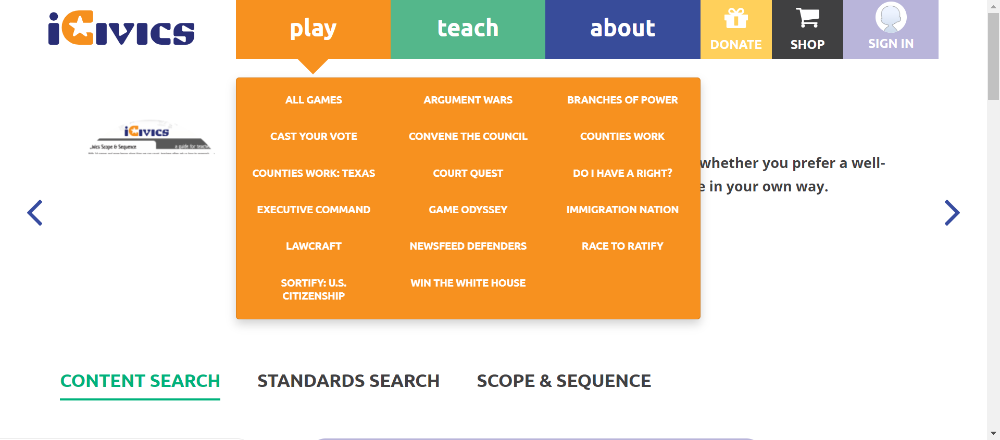 check_circle 5:01:32 PM The Element teach clicked check_circle 5:01:35 PM The mouse over by xpath : (//a[@title='Learn how you can financially support and fund iCivics.'])[3] is performed. 
check_circle 5:01:38 PM Expected Tooltip and Actual Tooltip text matched successfully 
check_circle 5:01:38 PM The Element about clicked 
check_circle 5:01:42 PM The mouse over by xpath : (//a[@title='Donate money to iCivics quickly and easily online.'])[2] is performed. 
check_circle 5:01:45 PM Expected Tooltip and Actual Tooltip text matched successfully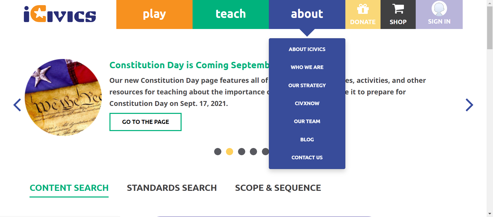 check_circle 5:01:55 PM The Element DONATE clicked 
check_circle 5:02:02 PM The mouse over by xpath : (//a[@title='Shop iCivics.'])[2] is performed. 
check_circle 5:02:05 PM Expected Tooltip and Actual Tooltip text matched successfully 
check_circle 5:02:05 PM The Element SHOP clicked 
check_circle 5:02:24 PM The mouse over by xpath : (//a[@title='Sign In'])[3] is performed. 
cancel 5:02:28 PM Expected Tooltip and Actual Tooltip text did not match 
check_circle 5:02:28 PM The Element SIGN IN clicked 
check_circle 5:02:31 PM The Element SIGN IN clicked check_circle 5:02:32 PM The Element LOG IN clicked check_circle 5:02:52 PM The mouse over by xpath : (//a[@title='MY ICIVICS'])[2] is performed. 
check_circle 5:02:58 PM Expected Tooltip and Actual Tooltip text matched successfully 
check_circle 5:02:59 PM The Element MY ICIVICS clicked 
-
-
HomepageHeader Jun 23, 2022 05:04:17 PM failJun 23, 2022 05:04:17 PM Jun 23, 2022 05:06:52 PM 0h 2m 35s+0ms
-
C6 - Do all buttons have hover/click states?
Jun 23, 2022 08:45:20 PM 0h 5m 16s+667ms failStatus Timestamp Details check_circle 5:04:47 PM The mouse over by xpath : (//a[@title='Play Games'])[3] is performed. 
check_circle 5:04:51 PM Expected Tooltip and Actual Tooltip text matched successfully 
check_circle 5:04:51 PM The Element play clicked 
check_circle 5:04:54 PM The mouse over by xpath : (//a[@title='Search Our Library'])[3] is performed.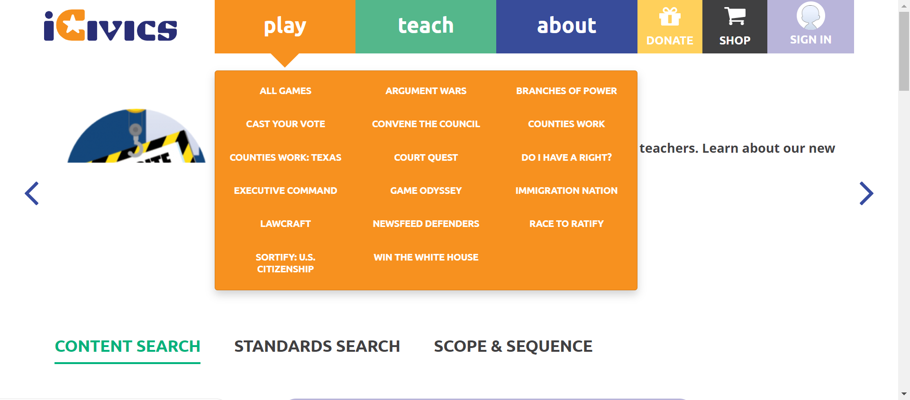 check_circle 5:04:58 PM Expected Tooltip and Actual Tooltip text matched successfully 
check_circle 5:04:58 PM The Element teach clicked 
check_circle 5:05:01 PM The mouse over by xpath : (//a[@title='Learn how you can financially support and fund iCivics.'])[3] is performed. 
check_circle 5:05:04 PM Expected Tooltip and Actual Tooltip text matched successfully 
check_circle 5:05:05 PM The Element about clicked 
check_circle 5:05:08 PM The mouse over by xpath : (//a[@title='Donate money to iCivics quickly and easily online.'])[2] is performed. 
check_circle 5:05:11 PM Expected Tooltip and Actual Tooltip text matched successfully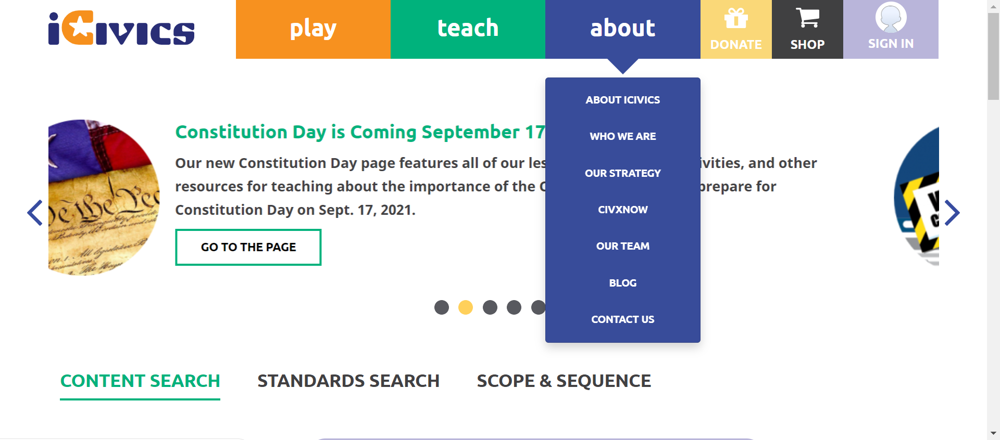 check_circle 5:05:36 PM The Element DONATE clicked 
check_circle 5:05:43 PM The mouse over by xpath : (//a[@title='Shop iCivics.'])[2] is performed. 
check_circle 5:05:46 PM Expected Tooltip and Actual Tooltip text matched successfully 
check_circle 5:05:47 PM The Element SHOP clicked 
check_circle 5:06:10 PM The mouse over by xpath : (//a[@title='Sign In'])[3] is performed. 
cancel 5:06:13 PM Expected Tooltip and Actual Tooltip text did not match 
check_circle 5:06:14 PM The Element SIGN IN clicked 
check_circle 5:06:24 PM The Element SIGN IN clicked check_circle 5:06:25 PM The Element LOG IN clicked check_circle 5:06:45 PM The mouse over by xpath : (//a[@title='MY ICIVICS'])[2] is performed.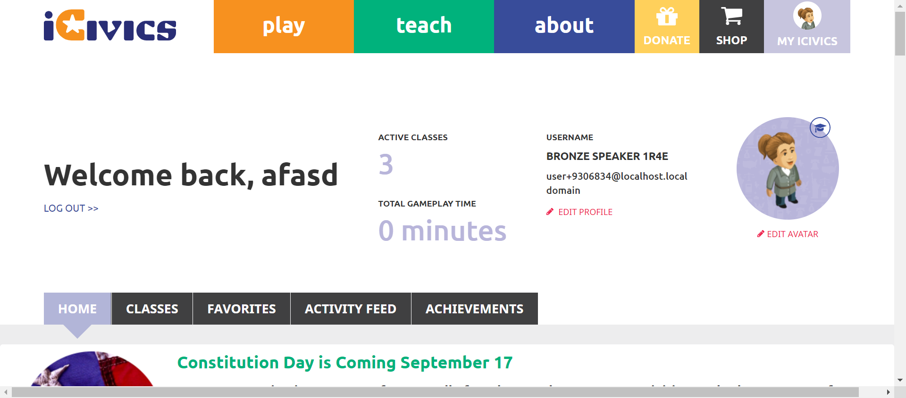 check_circle 5:06:52 PM Expected Tooltip and Actual Tooltip text matched successfully 
check_circle 5:06:52 PM The Element MY ICIVICS clicked 
-
-
HomepageHeader Jun 23, 2022 05:10:59 PM failJun 23, 2022 05:10:59 PM Jun 23, 2022 05:13:12 PM 0h 2m 13s+0ms
-
C6 - Do all buttons have hover/click states?
Jun 23, 2022 08:45:20 PM 0h 5m 16s+677ms failStatus Timestamp Details check_circle 5:11:30 PM The mouse over by xpath : (//a[@title='Play Games'])[3] is performed. 
check_circle 5:11:33 PM Expected Tooltip and Actual Tooltip text matched successfully 
check_circle 5:11:34 PM The Element play clicked 
check_circle 5:11:37 PM The mouse over by xpath : (//a[@title='Search Our Library'])[3] is performed. 
check_circle 5:11:40 PM Expected Tooltip and Actual Tooltip text matched successfully 
check_circle 5:11:40 PM The Element teach clicked 
check_circle 5:11:44 PM The mouse over by xpath : (//a[@title='Learn how you can financially support and fund iCivics.'])[3] is performed.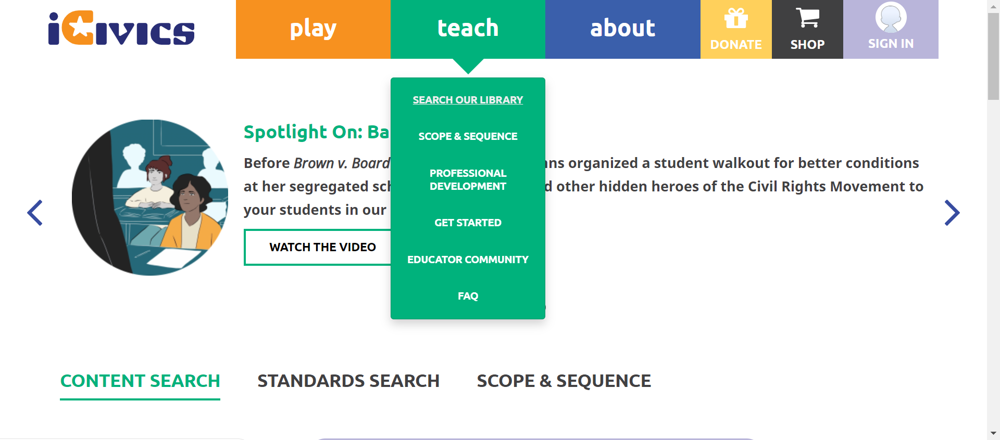 check_circle 5:11:47 PM Expected Tooltip and Actual Tooltip text matched successfully 
check_circle 5:11:47 PM The Element about clicked 
check_circle 5:11:51 PM The mouse over by xpath : (//a[@title='Donate money to iCivics quickly and easily online.'])[2] is performed. 
check_circle 5:11:54 PM Expected Tooltip and Actual Tooltip text matched successfully 
check_circle 5:12:04 PM The Element DONATE clicked 
check_circle 5:12:12 PM The mouse over by xpath : (//a[@title='Shop iCivics.'])[2] is performed. 
check_circle 5:12:16 PM Expected Tooltip and Actual Tooltip text matched successfully 
check_circle 5:12:19 PM The Element SHOP clicked 
check_circle 5:12:35 PM The mouse over by xpath : (//a[@title='Sign In'])[3] is performed. 
cancel 5:12:38 PM Expected Tooltip and Actual Tooltip text did not match 
check_circle 5:12:38 PM The Element SIGN IN clicked 
check_circle 5:12:42 PM The Element SIGN IN clicked check_circle 5:13:02 PM The Element LOG IN clicked 
check_circle 5:13:06 PM The mouse over by xpath : (//a[@title='MY ICIVICS'])[2] is performed. 
check_circle 5:13:12 PM Expected Tooltip and Actual Tooltip text matched successfully 
check_circle 5:13:12 PM The Element MY ICIVICS clicked 
-
-
HomepageHeader Jun 23, 2022 05:29:49 PM failJun 23, 2022 05:29:49 PM Jun 23, 2022 05:32:01 PM 0h 2m 12s+0ms
-
C6 - Do all buttons have hover/click states?
Jun 23, 2022 08:45:20 PM 0h 5m 16s+681ms failStatus Timestamp Details check_circle 5:30:21 PM The mouse over by xpath : (//a[@title='Play Games'])[3] is performed. 
check_circle 5:30:24 PM Expected Tooltip and Actual Tooltip text matched successfully 
check_circle 5:30:24 PM The Element play clicked 
check_circle 5:30:28 PM The mouse over by xpath : (//a[@title='Search Our Library'])[3] is performed.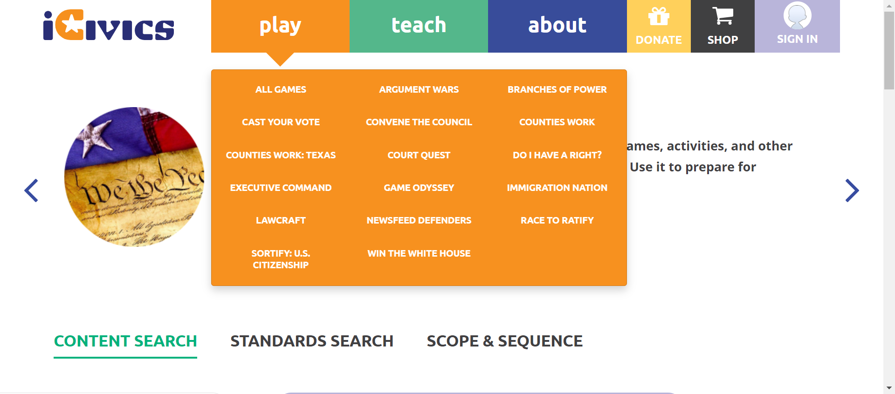 check_circle 5:30:31 PM Expected Tooltip and Actual Tooltip text matched successfully 
check_circle 5:30:31 PM The Element teach clicked 
check_circle 5:30:34 PM The mouse over by xpath : (//a[@title='Learn how you can financially support and fund iCivics.'])[3] is performed. 
check_circle 5:30:38 PM Expected Tooltip and Actual Tooltip text matched successfully 
check_circle 5:30:38 PM The Element about clicked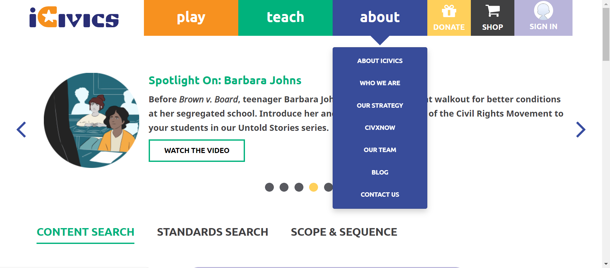 check_circle 5:30:41 PM The mouse over by xpath : (//a[@title='Donate money to iCivics quickly and easily online.'])[2] is performed.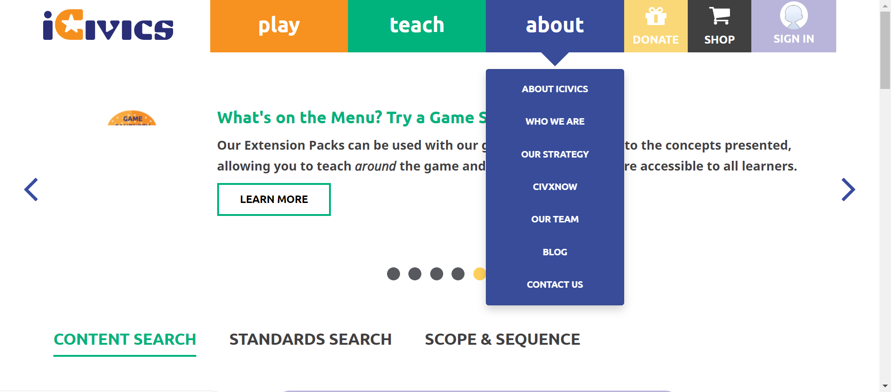 check_circle 5:30:44 PM Expected Tooltip and Actual Tooltip text matched successfully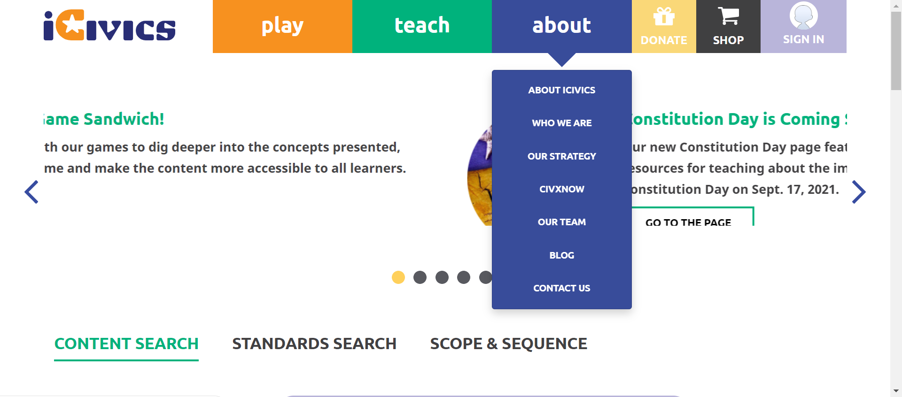 check_circle 5:30:54 PM The Element DONATE clicked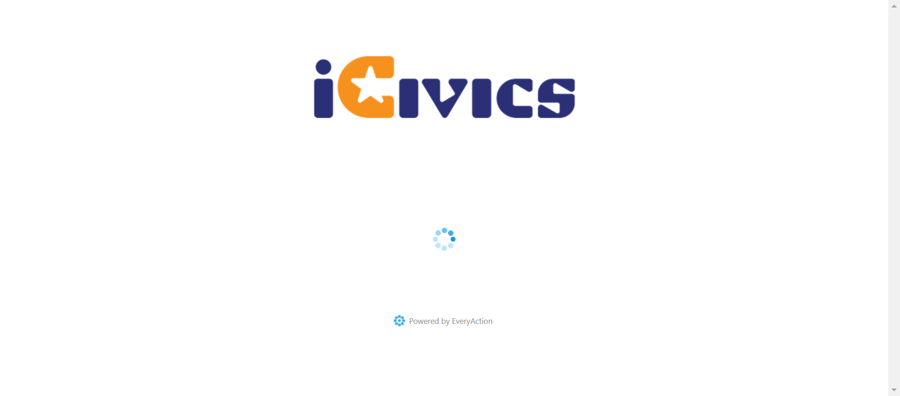 check_circle 5:31:01 PM The mouse over by xpath : (//a[@title='Shop iCivics.'])[2] is performed. 
check_circle 5:31:04 PM Expected Tooltip and Actual Tooltip text matched successfully 
check_circle 5:31:05 PM The Element SHOP clicked 
check_circle 5:31:24 PM The mouse over by xpath : (//a[@title='Sign In'])[3] is performed. 
cancel 5:31:27 PM Expected Tooltip and Actual Tooltip text did not match 
check_circle 5:31:27 PM The Element SIGN IN clicked 
check_circle 5:31:31 PM The Element SIGN IN clicked check_circle 5:31:52 PM The Element LOG IN clicked check_circle 5:31:55 PM The mouse over by xpath : (//a[@title='MY ICIVICS'])[2] is performed. 
check_circle 5:32:01 PM Expected Tooltip and Actual Tooltip text matched successfully 
check_circle 5:32:01 PM The Element MY ICIVICS clicked 
-
-
HomepageHeader Jun 23, 2022 05:37:43 PM failJun 23, 2022 05:37:43 PM Jun 23, 2022 05:39:38 PM 0h 1m 55s+0ms
-
C6 - Do all buttons have hover/click states?
Jun 23, 2022 08:45:20 PM 0h 5m 16s+687ms failStatus Timestamp Details check_circle 5:38:15 PM The mouse over by xpath : (//a[@title='Play Games'])[3] is performed. 
check_circle 5:38:18 PM Expected Tooltip and Actual Tooltip text matched successfully 
check_circle 5:38:18 PM The Element play clicked 
check_circle 5:38:22 PM The mouse over by xpath : (//a[@title='Search Our Library'])[3] is performed. 
check_circle 5:38:25 PM Expected Tooltip and Actual Tooltip text matched successfully 
check_circle 5:38:25 PM The Element teach clicked 
check_circle 5:38:28 PM The mouse over by xpath : (//a[@title='Learn how you can financially support and fund iCivics.'])[3] is performed. 
check_circle 5:38:32 PM Expected Tooltip and Actual Tooltip text matched successfully 
check_circle 5:38:32 PM The Element about clicked 
check_circle 5:38:35 PM The mouse over by xpath : (//a[@title='Donate money to iCivics quickly and easily online.'])[2] is performed. 
check_circle 5:38:39 PM Expected Tooltip and Actual Tooltip text matched successfully check_circle 5:38:47 PM The Element DONATE clicked 
check_circle 5:38:54 PM The mouse over by xpath : (//a[@title='Shop iCivics.'])[2] is performed. 
check_circle 5:38:57 PM Expected Tooltip and Actual Tooltip text matched successfully 
check_circle 5:38:58 PM The Element SHOP clicked 
check_circle 5:39:17 PM The mouse over by xpath : (//a[@title='Sign In'])[3] is performed. 
cancel 5:39:20 PM Expected Tooltip and Actual Tooltip text did not match 
check_circle 5:39:20 PM The Element SIGN IN clicked 
check_circle 5:39:23 PM The Element SIGN IN clicked 
check_circle 5:39:29 PM The Element LOG IN clicked check_circle 5:39:32 PM The mouse over by xpath : (//a[@title='MY ICIVICS'])[2] is performed. 
check_circle 5:39:38 PM Expected Tooltip and Actual Tooltip text matched successfully 
check_circle 5:39:38 PM The Element MY ICIVICS clicked 
-
-
HomepageHeaderteach2 Jun 23, 2022 05:43:27 PM failJun 23, 2022 05:43:27 PM Jun 23, 2022 05:45:01 PM 0h 1m 34s+0ms
-
C19 - If you are viewing one of the pages in the Teach submenu, is that page underlined in the submenu?
Jun 23, 2022 08:45:20 PM 0h 5m 16s+692ms failStatus Timestamp Details check_circle 5:44:00 PM Teachsubmenu is display 
check_circle 5:44:09 PM The Element teach clicked 
check_circle 5:44:16 PM Selected page is underlined and non selected page is not underlined 
check_circle 5:44:23 PM The Element teach clicked cancel 5:45:01 PM The Element with locator:XPATH&(//li[@class='active active-trail first search our library']/a)[2] Not Found with value: (//li[@class='active active-trail first search our library']/a)[2] 
-
-
HomepageHeaderteach2 Jun 23, 2022 05:47:32 PM failJun 23, 2022 05:47:32 PM Jun 23, 2022 05:49:02 PM 0h 1m 30s+0ms
-
C19 - If you are viewing one of the pages in the Teach submenu, is that page underlined in the submenu?
Jun 23, 2022 08:45:20 PM 0h 5m 16s+695ms failStatus Timestamp Details check_circle 5:48:03 PM Teachsubmenu is display 
check_circle 5:48:12 PM The Element teach clicked 
check_circle 5:48:19 PM Selected page is underlined and non selected page is not underlined 
check_circle 5:48:25 PM The Element teach clicked cancel 5:49:02 PM The Element with locator:XPATH&(//li[@class='active active-trail first search our library']/a)[2] Not Found with value: (//li[@class='active active-trail first search our library']/a)[2] 
-
-
HomepageHeaderteach2 Jun 23, 2022 05:51:08 PM failJun 23, 2022 05:51:08 PM Jun 23, 2022 05:52:37 PM 0h 1m 29s+0ms
-
C19 - If you are viewing one of the pages in the Teach submenu, is that page underlined in the submenu?
Jun 23, 2022 08:45:20 PM 0h 5m 16s+698ms failStatus Timestamp Details check_circle 5:51:37 PM Teachsubmenu is display 
check_circle 5:51:46 PM The Element teach clicked 
check_circle 5:51:53 PM Selected page is underlined and non selected page is not underlined 
check_circle 5:51:59 PM The Element teach clicked cancel 5:52:37 PM The Element with locator:XPATH&(//li[@class='active active-trail first search our library']/a)[2] Not Found with value: (//li[@class='active active-trail first search our library']/a)[2] 
-
-
HomepageHeaderteach2 Jun 23, 2022 06:56:15 PM failJun 23, 2022 06:56:15 PM Jun 23, 2022 06:58:40 PM 0h 2m 25s+0ms
-
C19 - If you are viewing one of the pages in the Teach submenu, is that page underlined in the submenu?
Jun 23, 2022 08:45:20 PM 0h 5m 16s+701ms failStatus Timestamp Details check_circle 6:57:00 PM Teachsubmenu is display 
check_circle 6:57:10 PM The Element teach clicked 
check_circle 6:57:18 PM Selected page is underlined and non selected page is not underlined 
check_circle 6:58:01 PM The Element teach clicked cancel 6:58:40 PM The Element with locator:XPATH&(//li[@class='active active-trail first search our library']/a)[2] Not Found with value: (//li[@class='active active-trail first search our library']/a)[2] 
-
-
HomepageHeaderteach2 Jun 23, 2022 07:08:03 PM failJun 23, 2022 07:08:03 PM Jun 23, 2022 07:11:45 PM 0h 3m 42s+0ms
-
C19 - If you are viewing one of the pages in the Teach submenu, is that page underlined in the submenu?
Jun 23, 2022 08:45:20 PM 0h 5m 16s+705ms failStatus Timestamp Details check_circle 7:08:46 PM Teachsubmenu is display 
check_circle 7:09:26 PM The Element teach clicked 
check_circle 7:09:33 PM Selected page is underlined and non selected page is not underlined 
check_circle 7:11:41 PM The Element teach clicked cancel 7:11:45 PM Selected page is not underlined 
check_circle 7:11:45 PM The Element teach clicked 
check_circle 7:11:45 PM Teach submenu is close on clicking again 
-
-
HomepageHeaderteach2 Jun 23, 2022 07:28:03 PM failJun 23, 2022 07:28:03 PM Jun 23, 2022 07:29:05 PM 0h 1m 2s+0ms
-
C19 - If you are viewing one of the pages in the Teach submenu, is that page underlined in the submenu?
Jun 23, 2022 08:45:20 PM 0h 5m 16s+709ms failStatus Timestamp Details check_circle 7:28:37 PM Teachsubmenu is display 
check_circle 7:28:46 PM The Element teach clicked 
check_circle 7:28:53 PM Selected page is underlined and non selected page is not underlined check_circle 7:29:01 PM The Element teach clicked cancel 7:29:05 PM Selected page is not underlined 
check_circle 7:29:05 PM The Element teach clicked check_circle 7:29:05 PM Teach submenu is close on clicking again 
-
-
HomepageHeaderteach2 Jun 23, 2022 07:31:27 PM failJun 23, 2022 07:31:27 PM Jun 23, 2022 07:33:08 PM 0h 1m 41s+0ms
-
C19 - If you are viewing one of the pages in the Teach submenu, is that page underlined in the submenu?
Jun 23, 2022 08:45:20 PM 0h 5m 16s+711ms failStatus Timestamp Details check_circle 7:32:00 PM Teachsubmenu is display 
check_circle 7:32:09 PM The Element teach clicked 
check_circle 7:32:16 PM Selected page is underlined and non selected page is not underlined 
check_circle 7:32:24 PM The Element teach clicked cancel 7:32:28 PM Selected page is not underlined 
check_circle 7:32:34 PM The Element teach clicked 
cancel 7:33:08 PM The Element with locator:XPATH&(//li[@class='professional development'])[2]/a Not Found with value: (//li[@class='professional development'])[2]/a 
-
-
HomepageHeaderteach2 Jun 23, 2022 07:41:19 PM failJun 23, 2022 07:41:19 PM Jun 23, 2022 07:42:56 PM 0h 1m 37s+0ms
-
C19 - If you are viewing one of the pages in the Teach submenu, is that page underlined in the submenu?
Jun 23, 2022 08:45:20 PM 0h 5m 16s+714ms failStatus Timestamp Details check_circle 7:41:53 PM Teachsubmenu is display 
check_circle 7:42:02 PM The Element teach clicked 
check_circle 7:42:09 PM Selected page is underlined and non selected page is not underlined check_circle 7:42:31 PM The Element teach clicked cancel 7:42:34 PM Selected page is not underlined 
check_circle 7:42:52 PM The Element teach clicked 
check_circle 7:42:55 PM Selected page is underlined and non selected page is not underlined 
check_circle 7:42:55 PM The Element teach clicked 
check_circle 7:42:56 PM Teach submenu is close on clicking again 
-
-
HomepageHeaderteach2 Jun 23, 2022 07:47:30 PM failJun 23, 2022 07:47:30 PM Jun 23, 2022 07:48:51 PM 0h 1m 21s+0ms
-
C19 - If you are viewing one of the pages in the Teach submenu, is that page underlined in the submenu?
Jun 23, 2022 08:45:20 PM 0h 5m 16s+717ms failStatus Timestamp Details check_circle 7:48:02 PM Teachsubmenu is display 
check_circle 7:48:11 PM The Element teach clicked 
check_circle 7:48:18 PM Selected page is underlined and non selected page is not underlined 
check_circle 7:48:25 PM The Element teach clicked cancel 7:48:28 PM Selected page is not underlined 
check_circle 7:48:48 PM The Element teach clicked 
check_circle 7:48:51 PM Selected page is underlined and non selected page is not underlined 
check_circle 7:48:51 PM The Element teach clicked 
check_circle 7:48:51 PM Teach submenu is close on clicking again
-
-
HomepageHeaderteach2 Jun 23, 2022 07:49:33 PM failJun 23, 2022 07:49:33 PM Jun 23, 2022 07:52:14 PM 0h 2m 41s+0ms
-
C19 - If you are viewing one of the pages in the Teach submenu, is that page underlined in the submenu?
Jun 23, 2022 08:45:20 PM 0h 5m 16s+721ms failStatus Timestamp Details check_circle 7:50:08 PM Teachsubmenu is display 
check_circle 7:50:18 PM The Element teach clicked 
check_circle 7:50:26 PM Selected page is underlined and non selected page is not underlined 
check_circle 7:50:39 PM The Element teach clicked cancel 7:50:42 PM Selected page is not underlined 
check_circle 7:51:01 PM The Element teach clicked 
check_circle 7:51:05 PM Selected page is underlined and non selected page is not underlined 
check_circle 7:51:40 PM The Element teach clicked 
cancel 7:52:14 PM The Element with locator:XPATH&(//li[@class='get started']/a)[2] Not Found with value: (//li[@class='get started']/a)[2] 
-
-
HomepageHeaderteach2 Jun 23, 2022 07:54:31 PM failJun 23, 2022 07:54:31 PM Jun 23, 2022 07:56:38 PM 0h 2m 7s+0ms
-
C19 - If you are viewing one of the pages in the Teach submenu, is that page underlined in the submenu?
Jun 23, 2022 08:45:20 PM 0h 5m 16s+725ms failStatus Timestamp Details check_circle 7:55:05 PM Teachsubmenu is display 
check_circle 7:55:16 PM The Element teach clicked 
check_circle 7:55:23 PM Selected page is underlined and non selected page is not underlined 
check_circle 7:55:36 PM The Element teach clicked cancel 7:55:40 PM Selected page is not underlined 
check_circle 7:55:59 PM The Element teach clicked 
check_circle 7:56:02 PM Selected page is underlined and non selected page is not underlined 
check_circle 7:56:34 PM The Element teach clicked 
cancel 7:56:38 PM Selected page is not underlined 
check_circle 7:56:38 PM The Element teach clicked 
check_circle 7:56:38 PM Teach submenu is close on clicking again 
-
-
HomepageHeaderteach2 Jun 23, 2022 07:57:37 PM failJun 23, 2022 07:57:37 PM Jun 23, 2022 07:59:51 PM 0h 2m 14s+0ms
-
C19 - If you are viewing one of the pages in the Teach submenu, is that page underlined in the submenu?
Jun 23, 2022 08:45:20 PM 0h 5m 16s+727ms failStatus Timestamp Details check_circle 7:58:12 PM Teachsubmenu is display 
check_circle 7:58:22 PM The Element teach clicked 
check_circle 7:58:29 PM Selected page is underlined and non selected page is not underlined check_circle 7:58:40 PM The Element teach clicked cancel 7:58:43 PM Selected page is not underlined 
check_circle 7:59:02 PM The Element teach clicked 
check_circle 7:59:05 PM Selected page is underlined and non selected page is not underlined 
check_circle 7:59:47 PM The Element teach clicked 
cancel 7:59:51 PM Selected page is not underlined 
check_circle 7:59:51 PM The Element teach clicked 
check_circle 7:59:51 PM Teach submenu is close on clicking again 
-
-
HomepageHeaderteach2 Jun 23, 2022 08:02:09 PM failJun 23, 2022 08:02:09 PM Jun 23, 2022 08:04:27 PM 0h 2m 18s+0ms
-
C19 - If you are viewing one of the pages in the Teach submenu, is that page underlined in the submenu?
Jun 23, 2022 08:45:20 PM 0h 5m 16s+730ms failStatus Timestamp Details check_circle 8:02:24 PM Teachsubmenu is display 
check_circle 8:02:50 PM The Element teach clicked 
check_circle 8:02:57 PM Selected page is underlined and non selected page is not underlined 
check_circle 8:03:07 PM The Element teach clicked cancel 8:03:11 PM Selected page is not underlined 
check_circle 8:03:28 PM The Element teach clicked 
check_circle 8:03:32 PM Selected page is underlined and non selected page is not underlined 
check_circle 8:04:23 PM The Element teach clicked 
cancel 8:04:26 PM Selected page is not underlined 
check_circle 8:04:27 PM The Element teach clicked 
check_circle 8:04:27 PM Teach submenu is close on clicking again 
-
-
HomepageHeaderteach2 Jun 23, 2022 08:10:52 PM failJun 23, 2022 08:10:52 PM Jun 23, 2022 08:13:03 PM 0h 2m 11s+0ms
-
C19 - If you are viewing one of the pages in the Teach submenu, is that page underlined in the submenu?
Jun 23, 2022 08:45:20 PM 0h 5m 16s+733ms failStatus Timestamp Details check_circle 8:11:26 PM Teachsubmenu is display 
check_circle 8:11:35 PM The Element teach clicked 
check_circle 8:11:43 PM Selected page is underlined and non selected page is not underlined 
check_circle 8:11:51 PM The Element teach clicked 
cancel 8:11:55 PM Selected page is not underlined 
check_circle 8:12:12 PM The Element teach clicked 
check_circle 8:12:16 PM Selected page is underlined and non selected page is not underlined 
check_circle 8:12:59 PM The Element teach clicked 
cancel 8:13:02 PM Selected page is not underlined 
check_circle 8:13:02 PM The Element teach clicked 
check_circle 8:13:03 PM Teach submenu is close on clicking again 
-
-
HomepageHeaderteach2 Jun 23, 2022 08:21:16 PM failJun 23, 2022 08:21:16 PM Jun 23, 2022 08:23:29 PM 0h 2m 13s+0ms
-
C19 - If you are viewing one of the pages in the Teach submenu, is that page underlined in the submenu?
Jun 23, 2022 08:45:20 PM 0h 5m 16s+735ms failStatus Timestamp Details check_circle 8:21:49 PM Teachsubmenu is display 
check_circle 8:21:58 PM The Element teach clicked 
check_circle 8:22:06 PM Selected page is underlined and non selected page is not underlined 
check_circle 8:22:17 PM The Element teach clicked cancel 8:22:21 PM Selected page is not underlined 
check_circle 8:22:40 PM The Element teach clicked 
check_circle 8:22:43 PM Selected page is underlined and non selected page is not underlined 
check_circle 8:23:25 PM The Element teach clicked 
cancel 8:23:29 PM Selected page is not underlined 
check_circle 8:23:29 PM The Element teach clicked 
check_circle 8:23:29 PM Teach submenu is close on clicking again 
-
-
HomepageHeaderteach2 Jun 23, 2022 08:36:58 PM failJun 23, 2022 08:36:58 PM Jun 23, 2022 08:39:04 PM 0h 2m 6s+0ms
-
C19 - If you are viewing one of the pages in the Teach submenu, is that page underlined in the submenu?
Jun 23, 2022 08:45:20 PM 0h 5m 16s+738ms failStatus Timestamp Details check_circle 8:37:33 PM Teachsubmenu is display 
check_circle 8:37:43 PM The Element teach clicked 
check_circle 8:37:50 PM Selected page is underlined and non selected page is not underlined check_circle 8:38:04 PM The Element teach clicked cancel 8:38:07 PM Selected page is not underlined 
check_circle 8:38:24 PM The Element teach clicked 
check_circle 8:38:28 PM Selected page is underlined and non selected page is not underlined 
check_circle 8:39:00 PM The Element teach clicked cancel 8:39:04 PM Selected page is not underlined 
check_circle 8:39:04 PM The Element teach clicked 
check_circle 8:39:04 PM Teach submenu is close on clicking again
-
-
HomepageHeaderteach2 Jun 23, 2022 08:40:04 PM failJun 23, 2022 08:40:04 PM Jun 23, 2022 08:43:07 PM 0h 3m 3s+0ms
-
C19 - If you are viewing one of the pages in the Teach submenu, is that page underlined in the submenu?
Jun 23, 2022 08:45:20 PM 0h 2m 13s+742ms failStatus Timestamp Details check_circle 8:40:40 PM Teachsubmenu is display 
check_circle 8:40:49 PM The Element teach clicked 
check_circle 8:40:56 PM Selected page is underlined and non selected page is not underlined 
check_circle 8:41:06 PM The Element teach clicked cancel 8:41:10 PM Selected page is not underlined 
check_circle 8:41:27 PM The Element teach clicked 
check_circle 8:41:31 PM Selected page is underlined and non selected page is not underlined 
check_circle 8:42:09 PM The Element teach clicked 
cancel 8:42:12 PM Selected page is not underlined 
cancel 8:43:07 PM The Element with locator:XPATH&(//a[@title='Search Our Library'])[3] Not Found with value: (//a[@title='Search Our Library'])[3] 
-
-
HomepageHeaderteach2 Jun 23, 2022 08:45:20 PM failJun 23, 2022 08:45:20 PM Jun 23, 2022 08:48:24 PM 0h 3m 3s+410ms
-
C19 - If you are viewing one of the pages in the Teach submenu, is that page underlined in the submenu?
Jun 23, 2022 08:48:24 PM 0h 2m 59s+908ms failStatus Timestamp Details check_circle 8:46:00 PM Teachsubmenu is display 
check_circle 8:46:09 PM The Element teach clicked 
check_circle 8:46:16 PM Selected page is underlined and non selected page is not underlined 
check_circle 8:46:30 PM The Element teach clicked 
cancel 8:46:33 PM Selected page is not underlined 
check_circle 8:46:44 PM The Element teach clicked 
check_circle 8:46:47 PM Selected page is underlined and non selected page is not underlined 
check_circle 8:47:31 PM The Element teach clicked 
cancel 8:47:34 PM Selected page is not underlined 
cancel 8:48:24 PM The Element with locator:XPATH&(//a[@title='Search Our Library'])[3] Not Found with value: (//a[@title='Search Our Library'])[3] 
-
info_outline
check_circle
cancel
cancel
error
warning
redo
clear
Dashboard
Tests
56
Steps
691
Start
Jun 23, 2022 08:45:19 PM
End
Jun 23, 2022 08:48:24 PM
Time Taken
0h 3m 5s+73ms